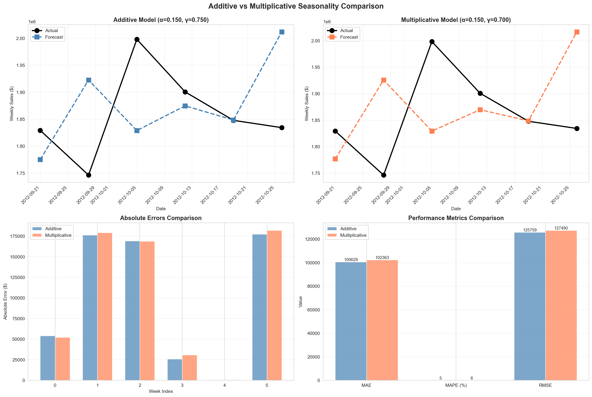
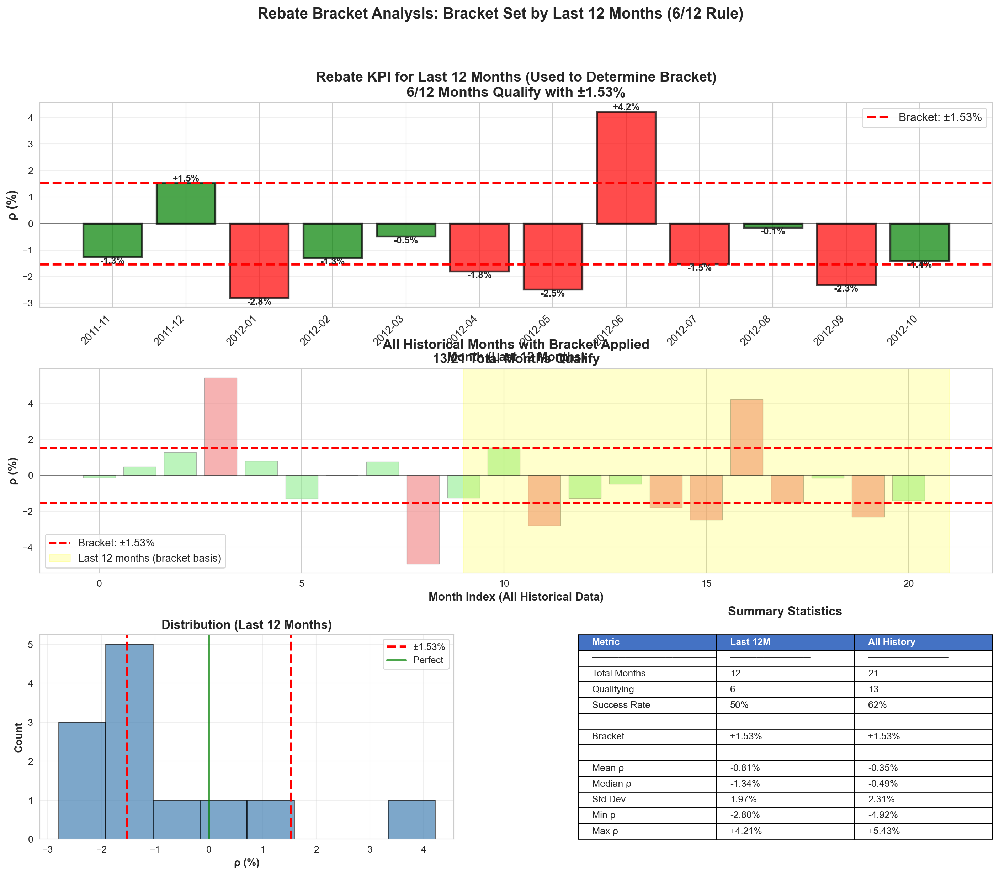
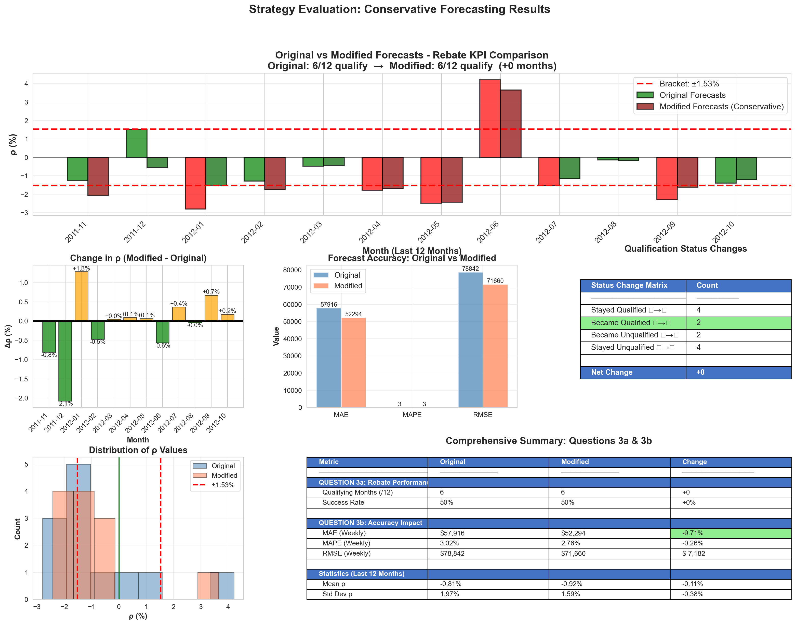
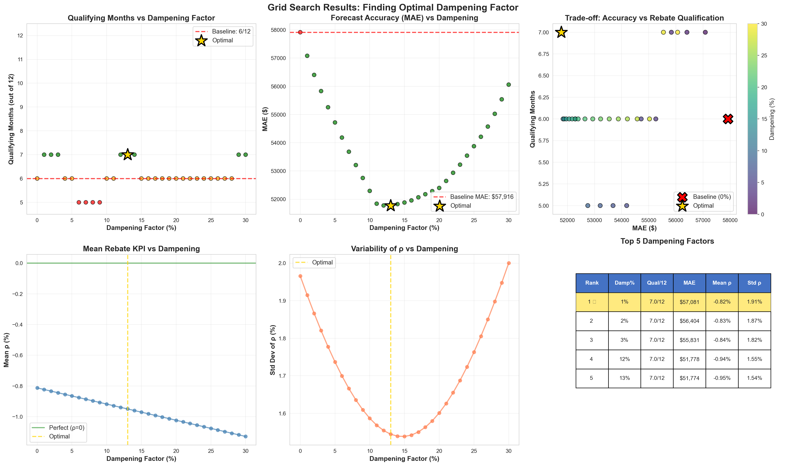
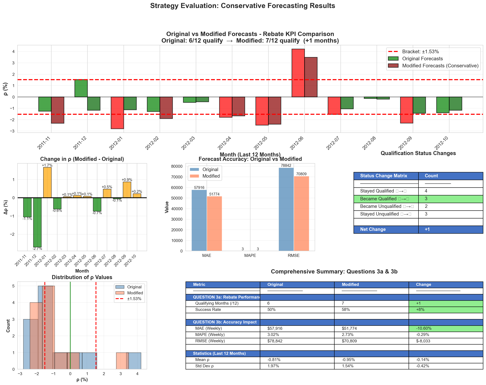

Optimized TES model, defining bracket +-X% and recommending different strategy approaches
Author
Costin-Andrei Taulescu & Panagiotis Valsamis
Published
January 27, 2026
Overview
In the following part of the project, we will use one store from our data with aggregated sales information for all its deparments. The goal is to create a model that will be able to predict as much accurate as possible the sales on the horizon of two weeks. If we are able to predict with high accuracy then we will know the order that needs to be placed in order to satisfy the demand and the main goal is to maximize a rebate laid out in a contract between the store and its supplier.
Evaluation Metric
The evaluation metric we will use will be the sum of forecasts for every month minus the sum of the actuals divided by the sum of the actuals. The sum will be 4 or 5 weeks depending on the month and if the final percentage is between a range that will be determined later we will get the rebate.
If pm is +10% on the one week, and -10% on the other week in the end of the month it will cancel out.
Procedure
Note
We will use the last 6 weeks of the data as testing data. So we will train the data based on the other weeks. We will use grid search to optimize the TES algorithm and find the best possible model that can perform good in two week horizons.
Based on the optimized model we found before we will retrain the whole dataset and will calculate each month performance of the last whole year, we will calculate the X% range, in which just the 6/12 months of the last year will be in that range. If we are able to predict the sales in that range we will get the rebate. After this, we will try to define a strategy that can be performed in order to include more of these months in the range and maximize the chances of getting the rebate. This strategy might not be statistically proved, but it might be more intuitive based on the data that we have. For example, one intuition might be if our model overperforms in the first two weeks of the month and underperforms in the last two weeks of the month, we might want to adjust our forecast for the last two weeks based on the error that we had in the first two weeks(like to reduce a percentage on every first two weeks and add a percentage of every two last weeks on each month).
Setup and Imports
Code
import pandas as pd import numpy as npimport matplotlib.pyplot as pltimport seaborn as snsfrom datetime import datetime, timedeltaimport warningswarnings.filterwarnings("ignore")import localelocale.setlocale(locale.LC_TIME, "English_United States.1252")sns.set_style("whitegrid")plt.rcParams['figure.figsize'] = (14, 6)import matplotlib.dates as mdates
Step 1: Importing and Visualizing the Data of Store 2
Note
As we also used on the first part of the project, we will use the store 2 data(just to have some different data exploration from part 1), after aggregated for all its departments. We will visualize the aggregated time series in order to see its main characteristics. We expect clear seasonality and not trend on the data(based on our findings from part 1).
Important
Data Preprocessing:
Leave last 6 weeks out
Remove negative values
Aggregate sales for all departments
Code
def load_and_prepare_data(filepath, store_id=2, test_weeks=6):""" Load Walmart data and prepare it for a specific store. Parameters: filepath : str, path to the CSV file store_id : int, store ID to extract test_weeks : int, number of weeks to reserve for testing Returns: train_df : DataFrame, training data test_df : DataFrame, testing data df_full : DataFrame, complete data for reference """print("="*60)print(f"STEP 2: LOADING DATA FOR STORE {store_id}")print("="*60)# Load data df = pd.read_csv(filepath)# Filter for specific store df = df[df['Store'] == store_id].copy()# Convert Date to datetime df['Date'] = pd.to_datetime(df['Date'])# Sort by date df = df.sort_values('Date').reset_index(drop=True)# Handle negative sales df["Weekly_Sales"] = df["Weekly_Sales"].where(df["Weekly_Sales"] >=0, 0)# Aggregate to store level (sum across all departments) df_store = df.groupby('Date').agg({'Weekly_Sales': 'sum','IsHoliday': 'first' }).reset_index()# Add time features df_store['Year'] = df_store['Date'].dt.year df_store['Month'] = df_store['Date'].dt.month df_store['Week'] = df_store['Date'].dt.isocalendar().weekprint(f" Data loaded successfully!")print(f" Date range: {df_store['Date'].min()} to {df_store['Date'].max()}")print(f" Total weeks: {len(df_store)}")print(f" First day of week: {df_store['Date'].iloc[0].strftime('%A')}")# Split into train and test split_point =len(df_store) - test_weeks train_df = df_store.iloc[:split_point].copy() test_df = df_store.iloc[split_point:].copy()print(f"\n Data split:")print(f" Training: {len(train_df)} weeks ({train_df['Date'].min()} to {train_df['Date'].max()})")print(f" Testing: {len(test_df)} weeks ({test_df['Date'].min()} to {test_df['Date'].max()})")# Basic statisticsprint(f"\n Training data statistics:")print(f" Mean: {train_df['Weekly_Sales'].mean():,.2f}")print(f" Std: {train_df['Weekly_Sales'].std():,.2f}")print(f" Min: {train_df['Weekly_Sales'].min():,.2f}")print(f" Max: {train_df['Weekly_Sales'].max():,.2f}")return train_df, test_df, df_storetrain_df,test_df,df_store = load_and_prepare_data("../data/train.csv", store_id=2, test_weeks=6)
============================================================
STEP 2: LOADING DATA FOR STORE 2
============================================================
Data loaded successfully!
Date range: 2010-02-05 00:00:00 to 2012-10-26 00:00:00
Total weeks: 143
First day of week: Friday
Data split:
Training: 137 weeks (2010-02-05 00:00:00 to 2012-09-14 00:00:00)
Testing: 6 weeks (2012-09-21 00:00:00 to 2012-10-26 00:00:00)
Training data statistics:
Mean: 1,928,684.34
Std: 241,920.08
Min: 1,650,394.44
Max: 3,436,154.68
Code
def visualize_training_data(train_df):""" Create comprehensive visualizations of training data for Jupyter notebook. Parameters: ----------- train_df : DataFrame with columns ['Date', 'Weekly_Sales', 'Month', 'Year'] """print("\n"+"="*60)print("VISUALIZING TRAINING DATA")print("="*60)# Create figure with subplots fig = plt.figure(figsize=(18, 12)) gs = fig.add_gridspec(3, 2, hspace=0.3, wspace=0.3)# 1. Complete time series ax1 = fig.add_subplot(gs[0, :]) ax1.plot(train_df['Date'], train_df['Weekly_Sales'], 'o-', linewidth=1.5, markersize=4, alpha=0.7, color='steelblue') ax1.set_title('Complete Time Series - Training Data', fontsize=14, fontweight='bold') ax1.set_xlabel('Date', fontsize=11) ax1.set_ylabel('Weekly Sales ($)', fontsize=11) ax1.grid(True, alpha=0.3) ax1.xaxis.set_major_locator(mdates.MonthLocator(interval=3)) ax1.xaxis.set_major_formatter(mdates.DateFormatter('%Y-%m')) plt.setp(ax1.xaxis.get_majorticklabels(), rotation=45, ha='right')# Add mean line mean_sales = train_df['Weekly_Sales'].mean() ax1.axhline(mean_sales, color='red', linestyle='--', linewidth=1.5, alpha=0.7, label=f'Mean: ${mean_sales:,.0f}') ax1.legend(fontsize=10)# 2. Sales by Month (Boxplot) ax2 = fig.add_subplot(gs[1, 0]) month_order =list(range(1, 13)) month_names = ['Jan', 'Feb', 'Mar', 'Apr', 'May', 'Jun', 'Jul', 'Aug', 'Sep', 'Oct', 'Nov', 'Dec'] box_data = [train_df[train_df['Month'] == m]['Weekly_Sales'].values for m in month_order] bp = ax2.boxplot(box_data, labels=month_names, patch_artist=True, boxprops=dict(facecolor='lightblue', alpha=0.7), medianprops=dict(color='red', linewidth=2), whiskerprops=dict(color='gray'), capprops=dict(color='gray')) ax2.set_title('Sales Distribution by Month', fontsize=13, fontweight='bold') ax2.set_xlabel('Month', fontsize=11) ax2.set_ylabel('Weekly Sales ($)', fontsize=11) ax2.grid(True, alpha=0.3, axis='y') plt.setp(ax2.xaxis.get_majorticklabels(), rotation=45, ha='right')# Highlight holiday monthsfor i, month inenumerate([11, 12], start=10): # Nov=10, Dec=11 (0-indexed) bp['boxes'][i].set_facecolor('coral') bp['boxes'][i].set_alpha(0.7)# 3. Average Sales by Month (Bar Chart) ax3 = fig.add_subplot(gs[1, 1]) monthly_avg = train_df.groupby('Month')['Weekly_Sales'].mean().reindex(month_order) colors = ['coral'if m in [11, 12] else'steelblue'for m in month_order] bars = ax3.bar(month_names, monthly_avg.values, color=colors, alpha=0.7, edgecolor='black') ax3.set_title('Average Sales by Month', fontsize=13, fontweight='bold') ax3.set_xlabel('Month', fontsize=11) ax3.set_ylabel('Average Weekly Sales ($)', fontsize=11) ax3.grid(True, alpha=0.3, axis='y') plt.setp(ax3.xaxis.get_majorticklabels(), rotation=45, ha='right')# Add value labels on barsfor bar in bars: height = bar.get_height() ax3.text(bar.get_x() + bar.get_width()/2., height,f'${height/1e6:.2f}M', ha='center', va='bottom', fontsize=9)# 4. Yearly Comparison ax4 = fig.add_subplot(gs[2, 0])for year insorted(train_df['Year'].unique()): year_data = train_df[train_df['Year'] == year].copy() year_data = year_data.sort_values('Date')# Create week of year year_data['WeekOfYear'] = year_data['Date'].dt.isocalendar().week ax4.plot(year_data['WeekOfYear'], year_data['Weekly_Sales'], 'o-', label=f'{year}', linewidth=2, markersize=4, alpha=0.7) ax4.set_title('Sales by Week of Year (Yearly Comparison)', fontsize=13, fontweight='bold') ax4.set_xlabel('Week of Year', fontsize=11) ax4.set_ylabel('Weekly Sales ($)', fontsize=11) ax4.legend(fontsize=10) ax4.grid(True, alpha=0.3)# 5. Sales Statistics Table ax5 = fig.add_subplot(gs[2, 1]) ax5.axis('off')# Calculate statistics stats_data = [] stats_data.append(['Overall Statistics', '']) stats_data.append(['Mean', f'${train_df["Weekly_Sales"].mean():,.0f}']) stats_data.append(['Median', f'${train_df["Weekly_Sales"].median():,.0f}']) stats_data.append(['Std Dev', f'${train_df["Weekly_Sales"].std():,.0f}']) stats_data.append(['Min', f'${train_df["Weekly_Sales"].min():,.0f}']) stats_data.append(['Max', f'${train_df["Weekly_Sales"].max():,.0f}']) stats_data.append(['', '']) stats_data.append(['By Year', ''])for year insorted(train_df['Year'].unique()): year_data = train_df[train_df['Year'] == year] stats_data.append([f'{year} Mean', f'${year_data["Weekly_Sales"].mean():,.0f}']) stats_data.append(['', '']) stats_data.append(['Seasonality', '']) stats_data.append(['Nov-Dec Avg', f'${train_df[train_df["Month"].isin([11,12])]["Weekly_Sales"].mean():,.0f}']) stats_data.append(['Other Months Avg', f'${train_df[~train_df["Month"].isin([11,12])]["Weekly_Sales"].mean():,.0f}'])# Create table table = ax5.table(cellText=stats_data, cellLoc='left', loc='center', bbox=[0, 0, 1, 1]) table.auto_set_font_size(False) table.set_fontsize(10) table.scale(1, 2)# Style the tablefor i inrange(len(stats_data)): cell = table[(i, 0)]if stats_data[i][0] in ['Overall Statistics', 'By Year', 'Seasonality']: cell.set_facecolor('#4472C4') cell.set_text_props(weight='bold', color='white')else: cell.set_facecolor('#E7E6E6'if i %2==0else'white') ax5.set_title('Summary Statistics', fontsize=13, fontweight='bold', pad=20) plt.suptitle(f'Training Data Analysis ({train_df["Date"].min().strftime("%Y-%m-%d")} to {train_df["Date"].max().strftime("%Y-%m-%d")})', fontsize=16, fontweight='bold', y=0.995) plt.tight_layout() plt.show()print("\nVisualization complete!")def plot_monthly_breakdown(train_df):""" Create individual plots for each month across all years. Parameters: ----------- train_df : DataFrame with training data """print("\n"+"="*60)print("CREATING MONTHLY BREAKDOWN")print("="*60)# Create figure with 12 subplots (one per month) fig, axes = plt.subplots(4, 3, figsize=(18, 16)) axes = axes.flatten() month_names = ['January', 'February', 'March', 'April', 'May', 'June','July', 'August', 'September', 'October', 'November', 'December']for month_num, (ax, month_name) inenumerate(zip(axes, month_names), start=1): month_data = train_df[train_df['Month'] == month_num].copy()iflen(month_data) >0:# Group by year for this monthfor year insorted(month_data['Year'].unique()): year_month_data = month_data[month_data['Year'] == year].sort_values('Date')# Use day of month for x-axis year_month_data['Day'] = year_month_data['Date'].dt.day ax.plot(year_month_data['Day'], year_month_data['Weekly_Sales'],'o-', label=f'{year}', linewidth=2, markersize=6, alpha=0.7) ax.set_title(month_name, fontsize=12, fontweight='bold') ax.set_xlabel('Day of Month', fontsize=10) ax.set_ylabel('Weekly Sales ($)', fontsize=10) ax.legend(fontsize=9) ax.grid(True, alpha=0.3) ax.ticklabel_format(style='plain', axis='y')# Format y-axis ax.yaxis.set_major_formatter(plt.FuncFormatter(lambda x, p: f'${x/1e6:.1f}M'))# Highlight if holiday monthif month_num in [11, 12]: ax.set_facecolor('#fff4e6')else: ax.text(0.5, 0.5, 'No Data', ha='center', va='center', transform=ax.transAxes, fontsize=12) ax.set_xticks([]) ax.set_yticks([]) plt.suptitle(f'Monthly Sales Breakdown - All Years', fontsize=16, fontweight='bold', y=0.995) plt.tight_layout() plt.show()print("\nMonthly breakdown complete!")visualize_training_data(train_df)plot_monthly_breakdown(train_df)
============================================================
VISUALIZING TRAINING DATA
============================================================
Based on the first image, with the whole time series (and more with the time series grouping by year) help us to undestand that there seems to be clear seasonality on the data, with peaks around the end of each year and lower sales on the middle of the year. There is no clear trend on the data, so we will not need to difference the data for trend removal(however we will test it with the same statistical models we used on part 1, to be sure that our first impression is correct).
The second image, provide us with a zoomed in version of the months of data(with grouping by year as well), where we can see more clearly the seasonality in every month seperately.
The table on the first plot, provide us with the main statistics of the data, where we can see that the mean is higher than the median, so there is some positive skewness on the data, which is also visible on the histogram plot.
November and December seems to be the months with the highest sales, while January seems to be the month with the lowest sales.
Based on the mean of each year, we can not claim that there is a decreasing trend
It is worth mentioning to take into consideration the last week of November in every year, where there is a clear peak in sales, which is probably due to Black Friday sales.
There is clear peak in December, probably due to Christmas sales.
It is worth mentioning that in every month except November, the last week of the month seems to have lower sales than the other weeks of the month.
Statistical Testing for Trend using run_trend_analysis python script
Code
from run_trend_analysis import analyze_series# Pass only the Weekly_Sales column, not the entire DataFrameanalyze_series(train_df['Weekly_Sales'], series_name="Store 1 Training Data")
######################################################################
COMPREHENSIVE TREND ANALYSIS FOR: Store 1 Training Data
######################################################################
Data points: 137
Mean: 1928684.34
Std Dev: 241035.54
Min: 1650394.44
Max: 3436154.68
======================================================================
1. MANN-KENDALL TEST (Non-parametric)
======================================================================
Trend: no trend
Test Statistic (S): -634.0
p-value: 0.238837
Tau (correlation): -0.068055
z-score: -1.177899
RESULT: No significant trend (p >= 0.05)
======================================================================
2. AUGMENTED DICKEY-FULLER (ADF) TEST
======================================================================
ADF Statistic: -3.632909
p-value: 0.005162
Lags used: 6
Number of observations: 130
Critical Values:
1%: -3.482
5%: -2.884
10%: -2.579
RESULT: Series is stationary (p < 0.05)
No unit root → Suggests NO trend
======================================================================
3. KPSS TEST (Kwiatkowski-Phillips-Schmidt-Shin)
======================================================================
KPSS Test (with trend):
KPSS Statistic: 0.053766
p-value: 0.100000
Lags used: 4
Critical Values:
10%: 0.119
5%: 0.146
2.5%: 0.176
1%: 0.216
RESULT: Series is trend stationary (p >= 0.05)
Null hypothesis not rejected → NO significant trend
======================================================================
4. LINEAR REGRESSION TEST
======================================================================
Slope: -328.489395
Intercept: 1951021.62
R-squared: 0.002905
p-value: 0.531634
Standard Error: 523.798359
95% Confidence Interval for slope: [-1364.401365, 707.422575]
RESULT: No significant linear trend (p >= 0.05)
======================================================================
5. COX-STUART TEST (Non-parametric)
======================================================================
Number of pairs: 68
Plus signs (+): 31 (second half > first half)
Minus signs (-): 37 (second half < first half)
Ties: 0
p-value: 0.544612
RESULT: No significant trend (p >= 0.05)
======================================================================
6. SPEARMAN'S RANK CORRELATION TEST (Bonus)
======================================================================
Spearman's rho: -0.086681
p-value: 0.313849
RESULT: No significant monotonic trend (p >= 0.05)
======================================================================
SUMMARY OF RESULTS
======================================================================
Trend Detection Tests:
Mann-Kendall: no trend (p=0.2388)
Linear Regression: No Trend (p=0.5316)
Cox-Stuart: No Trend (p=0.5446)
Spearman: No Trend (p=0.3138)
Stationarity Tests:
ADF: Stationary (p=0.0052)
KPSS: Trend Stationary (p=0.1000)
# ============================================# RUN COMPLETE COMPARISON# ============================================# Compare both modelscomparison_results = compare_additive_vs_multiplicative(train_df, test_df)# Visualize comparisonplot_additive_vs_multiplicative(comparison_results)winner = comparison_results['winner']print(f"\nBest model: {winner}")# Get the best model's results for Step 2if winner =='ADDITIVE': best_params = comparison_results['additive']['params'] best_results = comparison_results['additive']['results'] best_metrics = comparison_results['additive']['metrics']else: best_params = comparison_results['multiplicative']['params'] best_results = comparison_results['multiplicative']['results'] best_metrics = comparison_results['multiplicative']['metrics']print(f"\nBest parameters: α={best_params[0]:.3f}, γ={best_params[1]:.3f}")print(f"Test MAE: ${best_metrics['MAE']:,.2f}")print(f"Test MAPE: {best_metrics['MAPE']:.2f}%")
######################################################################
COMPARING ADDITIVE VS MULTIPLICATIVE SEASONALITY
######################################################################
======================================================================
MODEL 1: ADDITIVE SEASONALITY
======================================================================
============================================================
OPTIMIZING HOLT-WINTERS (ADDITIVE, NO TREND)
============================================================
Training data: 137 weeks
Testing 19 × 19 = 361 combinations...
Optimization complete!
============================================================
OPTIMAL PARAMETERS
============================================================
α (level): 0.150
γ (seasonal): 0.750
β (trend): 0.000 (fixed, no trend)
Training TSE: 567,286,960,444.85
Training RMSE: 64,348.90
============================================================
GENERATING HORIZON-2 FORECASTS FOR TEST SET
============================================================
Generating horizon-2 forecasts for 6 test weeks...
Horizon-2 forecasts generated!
============================================================
HORIZON-2 FORECAST ACCURACY (TEST SET)
============================================================
MAE: $100,628.92
MAPE: 5.43%
RMSE: $125,758.93
======================================================================
MODEL 2: MULTIPLICATIVE SEASONALITY
======================================================================
============================================================
OPTIMIZING HOLT-WINTERS (MULTIPLICATIVE, NO TREND)
============================================================
Training data: 137 weeks
Testing 19 × 19 = 361 combinations...
✓ Optimization complete!
============================================================
OPTIMAL PARAMETERS
============================================================
α (level): 0.150
γ (seasonal): 0.700
β (trend): 0.000 (fixed, no trend)
Training TSE: 536,670,064,607.86
Training RMSE: 62,588.34
============================================================
GENERATING HORIZON-2 FORECASTS (MULTIPLICATIVE)
============================================================
Generating horizon-2 forecasts for 6 test weeks...
Horizon-2 forecasts generated!
============================================================
HORIZON-2 FORECAST ACCURACY (TEST SET)
============================================================
MAE: $102,362.52
MAPE: 5.53%
RMSE: $127,490.37
======================================================================
MODEL COMPARISON SUMMARY
======================================================================
Model α (level) γ (seasonal) Train TSE Train RMSE Test MAE Test MAPE Test RMSE
Additive 0.15 0.75 5.672870e+11 64348.898461 100628.918746 5.433193 125758.933558
Multiplicative 0.15 0.70 5.366701e+11 62588.335508 102362.524037 5.527820 127490.371018
WINNER: ADDITIVE SEASONALITY
MAE improvement: 1.69% better than multiplicative

Best model: ADDITIVE
Best parameters: α=0.150, γ=0.750
Test MAE: $100,628.92
Test MAPE: 5.43%
Part 3.2.2
For this part we reimport the data and preprocess them. We are not splitting them into train and test set since we are only interested in finding the +-X % by using the TES model that we found above.
The same store again as well
We will define the KPI metric, which is needed for further analysis
Based on the last 12 months we will determing the +- X% in which just 6/12 are inside it
Code
def load_full_historical_data(filepath, store_id=2): # Same function as before but without splitting""" Load ALL historical data (no test split) for rebate analysis. Parameters: ----------- filepath : str, path to CSV file store_id : int, store ID Returns: -------- df_full : DataFrame with all historical data """print("="*60)print(f"LOADING FULL HISTORICAL DATA FOR STORE {store_id}")print("="*60)# Load data df = pd.read_csv(filepath)# Filter for specific store df = df[df['Store'] == store_id].copy()# Convert Date to datetime df['Date'] = pd.to_datetime(df['Date'])# Sort by date df = df.sort_values('Date').reset_index(drop=True)# Handle negative sales df["Weekly_Sales"] = df["Weekly_Sales"].where(df["Weekly_Sales"] >=0, 0)# Aggregate to store level df_store = df.groupby('Date').agg({'Weekly_Sales': 'sum','IsHoliday': 'first' }).reset_index()# Add time features df_store['Year'] = df_store['Date'].dt.year df_store['Month'] = df_store['Date'].dt.month df_store['Week'] = df_store['Date'].dt.isocalendar().week df_store['YearMonth'] = df_store['Date'].dt.to_period('M')print(f"\n Data loaded!")print(f" Date range: {df_store['Date'].min()} to {df_store['Date'].max()}")print(f" Total weeks: {len(df_store)}")return df_store
Code
# Function that uses the first 52 weeks to train and then starting retraining using rolling windowdef generate_all_horizon2_forecasts(df_historical, best_params, season_length=52): """ Generate horizon-2 forecasts for ALL historical data using rolling window. Parameters: ----------- df_historical : DataFrame with all historical data best_params : tuple (alpha, gamma) season_length : int, 52 for weekly data Returns: -------- forecast_df : DataFrame with forecasts for all weeks """print("\n"+"="*60)print("GENERATING HORIZON-2 FORECASTS FOR ALL HISTORICAL DATA")print("="*60) alpha_best, gamma_best = best_params m = season_length forecasts_h2 = [] actuals = [] dates = []print(f"\nGenerating forecasts using rolling window...")print(f"Total weeks: {len(df_historical)}")# Start from week 52 (need at least one season for initialization)# and forecast horizon-2 aheadfor i inrange(m, len(df_historical) -1): # -1 because we need i+1 to exist# Use all data up to week i current_data = df_historical.iloc[:i]['Weekly_Sales'].values# Fit model fitted, level, seasonals = hw_seasonal_no_trend(current_data, alpha_best, gamma_best, m)# Generate horizon-2 forecast seasonals = np.array(seasonals) seasonal_index_h2 =len(seasonals) - m +1# +1 for horizon-2 forecast_h2 = level + seasonals[seasonal_index_h2]# The forecast is for week i+1 (horizon-2 from perspective of week i-1) forecast_week_index = i +1if forecast_week_index <len(df_historical): forecasts_h2.append(forecast_h2) actuals.append(df_historical.iloc[forecast_week_index]['Weekly_Sales']) dates.append(df_historical.iloc[forecast_week_index]['Date'])# Create results dataframe forecast_df = pd.DataFrame({'Date': dates,'Actual': actuals,'Forecast_H2': forecasts_h2 })# Add time features forecast_df['Year'] = forecast_df['Date'].dt.year forecast_df['Month'] = forecast_df['Date'].dt.month forecast_df['YearMonth'] = forecast_df['Date'].dt.to_period('M')print(f"\n Generated {len(forecast_df)} horizon-2 forecasts")print(f" Date range: {forecast_df['Date'].min()} to {forecast_df['Date'].max()}")return forecast_df
Code
def calculate_all_monthly_rho(forecast_df):""" Calculate monthly ρ for ALL months in the data. Formula: ρ_m = (Σ forecasts - Σ actuals) / Σ actuals Parameters: ----------- forecast_df : DataFrame with Date, Actual, Forecast_H2 Returns: -------- monthly_rho_df : DataFrame with monthly ρ values for all months """print("\n"+"="*60)print("CALCULATING MONTHLY ρ FOR ALL HISTORICAL MONTHS")print("="*60)# Group by month and calculate sums monthly_stats = forecast_df.groupby('YearMonth').agg({'Actual': 'sum','Forecast_H2': 'sum' }).reset_index()# Calculate ρ for each month monthly_stats['rho'] = (monthly_stats['Forecast_H2'] - monthly_stats['Actual']) / monthly_stats['Actual'] monthly_stats['rho_pct'] = monthly_stats['rho'] *100# Count weeks per month weeks_per_month = forecast_df.groupby('YearMonth').size().reset_index(name='num_weeks') monthly_stats = monthly_stats.merge(weeks_per_month, on='YearMonth')print(f"\n Calculated ρ for {len(monthly_stats)} total months")print(f" Date range: {monthly_stats['YearMonth'].min()} to {monthly_stats['YearMonth'].max()}")return monthly_stats
Code
def determine_bracket_from_last_12_months(monthly_stats_all):""" Determine ±X% bracket using ONLY the last 12 months, where 6/12 qualify. Parameters: ----------- monthly_stats_all : DataFrame with monthly ρ for ALL months Returns: -------- X : float, the bracket percentage last_12_stats : DataFrame, stats for last 12 months monthly_stats_all : DataFrame, all months with qualification flag """print("\n"+"="*60)print("DETERMINING BRACKET BASED ON LAST 12 MONTHS")print("="*60)# Get the last 12 months last_12_stats = monthly_stats_all.tail(12).copy()print(f"\nTotal months in data: {len(monthly_stats_all)}")print(f"Using last 12 months for bracket determination:")print(f" From: {last_12_stats['YearMonth'].iloc[0]}")print(f" To: {last_12_stats['YearMonth'].iloc[-1]}")# Display last 12 monthsprint("\n"+"-"*80)print("LAST 12 MONTHS (used for determining bracket):")print("-"*80) display_df = last_12_stats[['YearMonth', 'Actual', 'Forecast_H2', 'rho_pct', 'num_weeks']].copy() display_df['YearMonth'] = display_df['YearMonth'].astype(str) display_df['Actual'] = display_df['Actual'].apply(lambda x: f'${x:,.0f}') display_df['Forecast_H2'] = display_df['Forecast_H2'].apply(lambda x: f'${x:,.0f}') display_df['rho_pct'] = display_df['rho_pct'].apply(lambda x: f'{x:+.2f}%')print(display_df.to_string(index=False))# Sort by absolute value of ρ (for last 12 months only) sorted_rho_abs = np.sort(last_12_stats['rho_pct'].abs().values)# Get the 6th smallest absolute ρ (index 5)# This means exactly 6 months will be inside the bracket X = sorted_rho_abs[5]print(f"\n"+"="*60)print(f"REBATE BRACKET: ±{X:.2f}%")print(f"(Determined from last 12 months where 6/12 qualify)")print("="*60)# Apply this bracket to ALL months monthly_stats_all['qualifies'] = monthly_stats_all['rho_pct'].abs() <= X last_12_stats['qualifies'] = last_12_stats['rho_pct'].abs() <= X# Show results for last 12 months qualifying_last_12 = last_12_stats[last_12_stats['qualifies']].copy() non_qualifying_last_12 = last_12_stats[~last_12_stats['qualifies']].copy()print(f"\nLAST 12 MONTHS - Months that QUALIFY (|ρ| ≤ {X:.2f}%):")print("-"*80) qual_display = qualifying_last_12[['YearMonth', 'rho_pct', 'num_weeks']].copy() qual_display['YearMonth'] = qual_display['YearMonth'].astype(str) qual_display['rho_pct'] = qual_display['rho_pct'].apply(lambda x: f'{x:+.2f}%')print(qual_display.to_string(index=False))print(f"\nLAST 12 MONTHS - Months that DO NOT qualify (|ρ| > {X:.2f}%):")print("-"*80) non_qual_display = non_qualifying_last_12[['YearMonth', 'rho_pct', 'num_weeks']].copy() non_qual_display['YearMonth'] = non_qual_display['YearMonth'].astype(str) non_qual_display['rho_pct'] = non_qual_display['rho_pct'].apply(lambda x: f'{x:+.2f}%')print(non_qual_display.to_string(index=False))# Show statistics for last 12 monthsprint(f"\n{'='*60}")print("STATISTICS (LAST 12 MONTHS)")print(f"{'='*60}")print(f"Qualifying months: {len(qualifying_last_12)}/12 ({len(qualifying_last_12)/12*100:.0f}%)")print(f"Mean ρ: {last_12_stats['rho_pct'].mean():+.2f}%")print(f"Median ρ: {last_12_stats['rho_pct'].median():+.2f}%")print(f"Std Dev: {last_12_stats['rho_pct'].std():.2f}%")print(f"Range: [{last_12_stats['rho_pct'].min():+.2f}%, {last_12_stats['rho_pct'].max():+.2f}%]")# Show how this bracket applies to ALL historical data total_qualifying = monthly_stats_all['qualifies'].sum()print(f"\n{'='*60}")print("BRACKET APPLIED TO ALL HISTORICAL DATA")print(f"{'='*60}")print(f"Total months: {len(monthly_stats_all)}")print(f"Qualifying months: {total_qualifying}/{len(monthly_stats_all)} ({total_qualifying/len(monthly_stats_all)*100:.1f}%)")return X, last_12_stats, monthly_stats_all
# ============================================# STEP 3.2: DETERMINE REBATE BRACKET# ============================================# Load FULL historical data (no test split)df_historical = load_full_historical_data("../data/train.csv", store_id=2)# Use best parameters from Step 3.1best_params = (0.150, 0.750) # α=0.150, γ=0.750 (Additive winner)# Generate horizon-2 forecasts for ALL historical dataforecast_all = generate_all_horizon2_forecasts(df_historical, best_params)# Calculate monthly ρ for ALL monthsmonthly_stats_all = calculate_all_monthly_rho(forecast_all)# Determine bracket using LAST 12 MONTHS (6/12 rule)X, last_12_stats, monthly_stats_with_bracket = determine_bracket_from_last_12_months(monthly_stats_all)# Visualizevisualize_bracket_analysis(monthly_stats_with_bracket, last_12_stats, X)print(f"\n{'='*60}")print("STEP 3.2 COMPLETE!")print(f"{'='*60}")print(f"Rebate Bracket: ±{X:.2f}%")print(f" Determined by: Last 12 months (6/12 qualify)")print(f" Applied to: All {len(monthly_stats_all)} historical months")print(f" Result: {monthly_stats_with_bracket['qualifies'].sum()}/{len(monthly_stats_all)} months qualify overall")
============================================================
LOADING FULL HISTORICAL DATA FOR STORE 2
============================================================
Data loaded!
Date range: 2010-02-05 00:00:00 to 2012-10-26 00:00:00
Total weeks: 143
============================================================
GENERATING HORIZON-2 FORECASTS FOR ALL HISTORICAL DATA
============================================================
Generating forecasts using rolling window...
Total weeks: 143
Generated 90 horizon-2 forecasts
Date range: 2011-02-11 00:00:00 to 2012-10-26 00:00:00
============================================================
CALCULATING MONTHLY ρ FOR ALL HISTORICAL MONTHS
============================================================
Calculated ρ for 21 total months
Date range: 2011-02 to 2012-10
============================================================
DETERMINING BRACKET BASED ON LAST 12 MONTHS
============================================================
Total months in data: 21
Using last 12 months for bracket determination:
From: 2011-11
To: 2012-10
--------------------------------------------------------------------------------
LAST 12 MONTHS (used for determining bracket):
--------------------------------------------------------------------------------
YearMonth Actual Forecast_H2 rho_pct num_weeks
2011-11 $8,397,398 $8,291,590 -1.26% 4
2011-12 $11,776,945 $11,956,622 +1.53% 5
2012-01 $6,916,921 $6,723,460 -2.80% 4
2012-02 $8,097,118 $7,992,937 -1.29% 4
2012-03 $9,514,186 $9,467,878 -0.49% 5
2012-04 $7,676,415 $7,538,583 -1.80% 4
2012-05 $7,755,210 $7,562,350 -2.49% 4
2012-06 $9,652,044 $10,058,780 +4.21% 5
2012-07 $7,449,204 $7,335,182 -1.53% 4
2012-08 $9,564,712 $9,551,045 -0.14% 5
2012-09 $7,289,470 $7,121,551 -2.30% 4
2012-10 $7,581,515 $7,475,334 -1.40% 4
============================================================
REBATE BRACKET: ±1.53%
(Determined from last 12 months where 6/12 qualify)
============================================================
LAST 12 MONTHS - Months that QUALIFY (|ρ| ≤ 1.53%):
--------------------------------------------------------------------------------
YearMonth rho_pct num_weeks
2011-11 -1.26% 4
2011-12 +1.53% 5
2012-02 -1.29% 4
2012-03 -0.49% 5
2012-08 -0.14% 5
2012-10 -1.40% 4
LAST 12 MONTHS - Months that DO NOT qualify (|ρ| > 1.53%):
--------------------------------------------------------------------------------
YearMonth rho_pct num_weeks
2012-01 -2.80% 4
2012-04 -1.80% 4
2012-05 -2.49% 4
2012-06 +4.21% 5
2012-07 -1.53% 4
2012-09 -2.30% 4
============================================================
STATISTICS (LAST 12 MONTHS)
============================================================
Qualifying months: 6/12 (50%)
Mean ρ: -0.81%
Median ρ: -1.34%
Std Dev: 1.97%
Range: [-2.80%, +4.21%]
============================================================
BRACKET APPLIED TO ALL HISTORICAL DATA
============================================================
Total months: 21
Qualifying months: 13/21 (61.9%)

============================================================
STEP 3.2 COMPLETE!
============================================================
Rebate Bracket: ±1.53%
Determined by: Last 12 months (6/12 qualify)
Applied to: All 21 historical months
Result: 13/21 months qualify overall
Note:
By making a comparison with the graph that compares the weekly sales per year and per month, can be easily understandable why some months are performing very well on rolling windows (like November and December). What we mean by this, is that if we take a look on November and December of 2010 and 2011 are having very similar pattern, so the model can easily make a very accurate forecasting.
On the opposite scenario, if we compare months like January and June, with the previous years, we can observe a different pattern, which leads to relatively poor forecasts
Part 3.3 – New Strategy to improve the forecastings
We are thinking of different strategies that can improve the results. Most of them are based on intuitevely reasons, some of them might not make sense statistically, but they can improve significantly the results and add more months on the rebate change.
Before, explaining them let us introduce some results from the above graph, that lead us to these ideas.
Our current results, show a under forecasting on average (mean is around -0.8%)
Range from -2.8% to 4.21%
Some months are just outside of the bracket (e.g. -1.8%,-2.3%,-2.5%)
Based on the above results, we are thinking of the following strategies:
Bias correction → Since we are mainly under forecasting by mean of around -0.8% we can just add 0.8% to all forecasts.
Variance reduction → Reduce forecast variance by dampening toward the mean
Adaptive monthly adjustment → Based on the history of each month reduce or add the forecast, however this approach seems not to be feasible since we dont have a lot of data on a monthly basis.
Note:
In most of the cases dampening factor is used when we are dealing with trend, however we have already saw that the time series that we are dealing of does not have trend at all(as we proved with the statistical tests). So even though, dampnening is mainly use when we are dealing with trend components, we would like to try this approach to check for any further improvements. We are reminding that dampening factor in very simple words, just reduces or increases the forecasting towards to the mean of our data
Understanding the Dampening Strategy
Important Clarification: Why dampening when β=0 (no trend)?
Our statistical tests confirmed there is no trend in the data (β=0). However, dampening is still beneficial because:
Dampening ≠ Trend Adjustment
Trend (β): Controls long-term directional change (growth/decline over time)
Dampening (d): Reduces forecast variance by pulling predictions toward the mean
The Problem We’re Solving
Even without trend, our forecasts have high variance
Some months we over-forecast (+4.2%), some we under-forecast (-2.8%)
This volatility pushes ρ values outside the ±X% bracket
How Dampening Helps
Reduces extreme forecasts (both high and low)
Pulls forecasts toward the historical mean
Result: More stable monthly ρ values → More months qualify
Analogy:
Setting β=0 says: “The business isn’t growing or shrinking”
Dampening says: “Let’s make our forecasts less aggressive/extreme”
These are independent decisions solving different problems!
# ============================================# STEP 3.3: STRATEGY TO IMPROVE REBATE CHANCES# ============================================# Apply conservative strategy (10% dampening)forecast_modified, hist_mean = apply_conservative_strategy(forecast_all, damping_factor=0.10)# Calculate monthly ρ with modified forecastsmonthly_modified = calculate_monthly_rho_with_strategy(forecast_modified)# Evaluate strategy (answers both 3a and 3b)evaluation = evaluate_strategy_performance(monthly_modified, forecast_modified, X)# Visualize comprehensive resultsvisualize_strategy_results(evaluation['last_12_stats'], X, evaluation)# Print final summaryprint("\n"+"="*70)print(" STEP 3.3 COMPLETE - FINAL SUMMARY")print("="*70)print(f"\n Additional Qualifying Months")print(f" Answer: {evaluation['additional_months']:+d} months")print(f" (From {evaluation['original_qualifying']}/12 to {evaluation['modified_qualifying']}/12)")print(f"\n Accuracy Impact")print(f" Answer: MAE changed by {evaluation['mae_change_pct']:+.2f}%")if evaluation['mae_change_pct'] <0:print(f" Accuracy actually IMPROVED!")else:print(f" Trade-off: Small accuracy loss for better rebate qualification")
============================================================
APPLYING CONSERVATIVE FORECASTING STRATEGY
============================================================
Strategy: Conservative Forecasting
Method: Dampen forecasts 10% toward historical mean
Historical mean: $1,902,516.63
Damping factor: 0.10
Strategy applied to 90 weekly forecasts
============================================================
CALCULATING MONTHLY ρ WITH MODIFIED FORECASTS
============================================================
Calculated ρ for 21 months with modified forecasts
============================================================
EVALUATING STRATEGY PERFORMANCE
============================================================
============================================================
QUESTION 3a: HOW MANY MORE MONTHS QUALIFY?
============================================================
Original forecasts: 6/12 months qualify
Modified forecasts: 6/12 months qualify
Additional months: +0 months
NEUTRAL: Strategy maintains same qualification rate
Months that CHANGED qualification status:
--------------------------------------------------------------------------------
2011-11: → ✗ (ρ: -1.26% → -2.07%)
2012-01: ✗ → (ρ: -2.80% → -1.52%)
2012-02: → ✗ (ρ: -1.29% → -1.76%)
2012-07: ✗ → (ρ: -1.53% → -1.16%)
============================================================
QUESTION 3b: HOW MUCH ACCURACY DO WE LOSE?
============================================================
Weekly Forecast Accuracy:
--------------------------------------------------------------------------------
Metric Original Modified Change
--------------------------------------------------------------------------------
MAE $57,915.50 $52,294.44 -5,621.07 (-9.71%)
MAPE 3.02 % 2.76 % -0.26%
RMSE $78,842.18 $71,660.11 -7,182.07
EXCELLENT: Accuracy IMPROVED by 9.71%!
This is a WIN-WIN: More rebates + Better accuracy
Monthly Forecast Accuracy (Last 12 Months):
--------------------------------------------------------------------------------
Monthly MAE (Original): $147,387.64
Monthly MAE (Modified): $126,208.47
Change: -21,179.18 (-14.37%)

======================================================================
STEP 3.3 COMPLETE - FINAL SUMMARY
======================================================================
Additional Qualifying Months
Answer: +0 months
(From 6/12 to 6/12)
Accuracy Impact
Answer: MAE changed by -9.71%
Accuracy actually IMPROVED!
Note:
We can see from the above graph that we mananged to improve the MAE of our forecastings, but we were not able to add more months on the rebate region. For this case, we will try below to find a more optimal dampening factor that can also helps us towards this direction.
Grid Search to find the optimal dampening factor that can provide a bigger number of rebate months
Code
# ============================================# STEP 3.3: GRID SEARCH FOR OPTIMAL DAMPENING FACTOR# ============================================def grid_search_dampening_factor(forecast_all, monthly_stats_all, X, damping_range=np.arange(0.0, 0.6, 0.01)):""" Grid search to find optimal dampening factor that maximizes qualifying months. Parameters: ----------- forecast_all : DataFrame with all forecasts monthly_stats_all : DataFrame with all monthly stats X : float, the bracket percentage damping_range : array, range of dampening factors to test (e.g., 0% to 30%) Returns: -------- results_df : DataFrame with results for each dampening factor best_damping : float, optimal dampening factor """print("\n"+"="*70)print("GRID SEARCH: FINDING OPTIMAL DAMPENING FACTOR")print("="*70)print(f"\nTesting {len(damping_range)} dampening factors from {damping_range[0]:.2f} to {damping_range[-1]:.2f}")print(f"Goal: Maximize qualifying months in last 12 months")print(f"Bracket: ±{X:.2f}%\n") historical_mean = forecast_all['Actual'].mean() results = []# Test each dampening factorfor damping in damping_range:# Apply strategy forecast_modified = forecast_all.copy() forecast_modified['Forecast_Modified'] = ( forecast_all['Forecast_H2'] * (1- damping) + historical_mean * damping )# Calculate monthly ρ with modified forecasts monthly_modified = forecast_modified.groupby('YearMonth').agg({'Actual': 'sum','Forecast_H2': 'sum','Forecast_Modified': 'sum' }).reset_index() monthly_modified['rho_modified'] = ( (monthly_modified['Forecast_Modified'] - monthly_modified['Actual']) / monthly_modified['Actual'] ) monthly_modified['rho_modified_pct'] = monthly_modified['rho_modified'] *100# Get last 12 months last_12 = monthly_modified.tail(12)# Apply bracket last_12['qualifies'] = last_12['rho_modified_pct'].abs() <= X qualifying_count = last_12['qualifies'].sum()# Calculate accuracy metrics mae = np.mean(np.abs(forecast_modified['Actual'] - forecast_modified['Forecast_Modified'])) mape = np.mean(np.abs( (forecast_modified['Actual'] - forecast_modified['Forecast_Modified']) / forecast_modified['Actual'] )) *100 rmse = np.sqrt(np.mean( (forecast_modified['Actual'] - forecast_modified['Forecast_Modified'])**2 ))# Calculate ρ statistics mean_rho = last_12['rho_modified_pct'].mean() std_rho = last_12['rho_modified_pct'].std() max_abs_rho = last_12['rho_modified_pct'].abs().max() results.append({'damping': damping,'qualifying_months': qualifying_count,'mae': mae,'mape': mape,'rmse': rmse,'mean_rho': mean_rho,'std_rho': std_rho,'max_abs_rho': max_abs_rho }) results_df = pd.DataFrame(results)# Find best dampening factor max_qualifying = results_df['qualifying_months'].max() best_results = results_df[results_df['qualifying_months'] == max_qualifying]# Among those with max qualifying months, choose the one with best MAE best_idx = best_results['mae'].idxmin() best_damping = results_df.loc[best_idx, 'damping']print(f" Grid search complete!")print(f"\n{'='*70}")print("OPTIMAL DAMPENING FACTOR")print(f"{'='*70}")print(f"Best damping: {best_damping:.2f} ({best_damping*100:.0f}% toward mean)")print(f" Qualifying months: {int(results_df.loc[best_idx, 'qualifying_months'])}/12")print(f" MAE: ${results_df.loc[best_idx, 'mae']:,.2f}")print(f" MAPE: {results_df.loc[best_idx, 'mape']:.2f}%")print(f" Mean ρ: {results_df.loc[best_idx, 'mean_rho']:+.2f}%")print(f" Std Dev ρ: {results_df.loc[best_idx, 'std_rho']:.2f}%")# Show baseline for comparison baseline = results_df[results_df['damping'] ==0.0].iloc[0]print(f"\nBaseline (no dampening):")print(f" Qualifying months: {int(baseline['qualifying_months'])}/12")print(f" MAE: ${baseline['mae']:,.2f}")# Show improvement improvement_months =int(results_df.loc[best_idx, 'qualifying_months']) -int(baseline['qualifying_months']) improvement_mae_pct = ((results_df.loc[best_idx, 'mae'] - baseline['mae']) / baseline['mae']) *100print(f"\nImprovement:")print(f" Additional months: {improvement_months:+d}")print(f" MAE change: {improvement_mae_pct:+.2f}%")return results_df, best_dampingdef visualize_grid_search_results(results_df, X, baseline_qualifying=6):""" Visualize grid search results showing trade-off between qualifying months and accuracy. """ fig, axes = plt.subplots(2, 3, figsize=(20, 12))# Plot 1: Qualifying months vs dampening ax1 = axes[0, 0]# Color points by whether they're better than baseline colors = ['green'if q > baseline_qualifying else'red'if q < baseline_qualifying else'orange'for q in results_df['qualifying_months']] ax1.scatter(results_df['damping']*100, results_df['qualifying_months'], c=colors, s=50, alpha=0.7, edgecolor='black') ax1.axhline(baseline_qualifying, color='red', linestyle='--', linewidth=2, label=f'Baseline: {baseline_qualifying}/12', alpha=0.7)# Mark the best point best_idx = results_df['qualifying_months'].idxmax() best_mae_in_best = results_df[results_df['qualifying_months'] == results_df['qualifying_months'].max()]['mae'].idxmin() ax1.scatter(results_df.loc[best_mae_in_best, 'damping']*100, results_df.loc[best_mae_in_best, 'qualifying_months'], marker='*', s=500, color='gold', edgecolor='black', linewidth=2, label='Optimal', zorder=5) ax1.set_xlabel('Dampening Factor (%)', fontsize=12, fontweight='bold') ax1.set_ylabel('Qualifying Months (out of 12)', fontsize=12, fontweight='bold') ax1.set_title('Qualifying Months vs Dampening Factor', fontsize=14, fontweight='bold') ax1.legend(fontsize=11) ax1.grid(True, alpha=0.3) ax1.set_ylim([results_df['qualifying_months'].min() -0.5, 12.5])# Plot 2: MAE vs dampening ax2 = axes[0, 1] baseline_mae = results_df[results_df['damping'] ==0.0]['mae'].values[0] colors2 = ['green'if mae < baseline_mae else'red'for mae in results_df['mae']] ax2.scatter(results_df['damping']*100, results_df['mae'], c=colors2, s=50, alpha=0.7, edgecolor='black') ax2.axhline(baseline_mae, color='red', linestyle='--', linewidth=2, label=f'Baseline MAE: ${baseline_mae:,.0f}', alpha=0.7)# Mark optimal ax2.scatter(results_df.loc[best_mae_in_best, 'damping']*100, results_df.loc[best_mae_in_best, 'mae'], marker='*', s=500, color='gold', edgecolor='black', linewidth=2, label='Optimal', zorder=5) ax2.set_xlabel('Dampening Factor (%)', fontsize=12, fontweight='bold') ax2.set_ylabel('MAE ($)', fontsize=12, fontweight='bold') ax2.set_title('Forecast Accuracy (MAE) vs Dampening', fontsize=14, fontweight='bold') ax2.legend(fontsize=11) ax2.grid(True, alpha=0.3) ax2.ticklabel_format(style='plain', axis='y')# Plot 3: Trade-off curve ax3 = axes[0, 2]# Create color gradient based on dampening scatter = ax3.scatter(results_df['mae'], results_df['qualifying_months'], c=results_df['damping']*100, s=60, alpha=0.7, cmap='viridis', edgecolor='black')# Mark baseline baseline_row = results_df[results_df['damping'] ==0.0].iloc[0] ax3.scatter(baseline_row['mae'], baseline_row['qualifying_months'], marker='X', s=300, color='red', edgecolor='black', linewidth=2, label='Baseline (0%)', zorder=5)# Mark optimal ax3.scatter(results_df.loc[best_mae_in_best, 'mae'], results_df.loc[best_mae_in_best, 'qualifying_months'], marker='*', s=500, color='gold', edgecolor='black', linewidth=2, label='Optimal', zorder=5) cbar = plt.colorbar(scatter, ax=ax3) cbar.set_label('Dampening (%)', fontsize=11) ax3.set_xlabel('MAE ($)', fontsize=12, fontweight='bold') ax3.set_ylabel('Qualifying Months', fontsize=12, fontweight='bold') ax3.set_title('Trade-off: Accuracy vs Rebate Qualification', fontsize=14, fontweight='bold') ax3.legend(fontsize=11) ax3.grid(True, alpha=0.3) ax3.ticklabel_format(style='plain', axis='x')# Plot 4: Mean ρ vs dampening ax4 = axes[1, 0] ax4.plot(results_df['damping']*100, results_df['mean_rho'], 'o-', linewidth=2, markersize=6, color='steelblue', alpha=0.7) ax4.axhline(0, color='green', linestyle='-', linewidth=2, alpha=0.5, label='Perfect (ρ=0)') ax4.axvline(results_df.loc[best_mae_in_best, 'damping']*100, color='gold', linestyle='--', linewidth=2, label='Optimal', alpha=0.7) ax4.set_xlabel('Dampening Factor (%)', fontsize=12, fontweight='bold') ax4.set_ylabel('Mean ρ (%)', fontsize=12, fontweight='bold') ax4.set_title('Mean Rebate KPI vs Dampening', fontsize=14, fontweight='bold') ax4.legend(fontsize=11) ax4.grid(True, alpha=0.3)# Plot 5: Std Dev of ρ vs dampening ax5 = axes[1, 1] ax5.plot(results_df['damping']*100, results_df['std_rho'],'o-', linewidth=2, markersize=6, color='coral', alpha=0.7) ax5.axvline(results_df.loc[best_mae_in_best, 'damping']*100, color='gold', linestyle='--', linewidth=2, label='Optimal', alpha=0.7) ax5.set_xlabel('Dampening Factor (%)', fontsize=12, fontweight='bold') ax5.set_ylabel('Std Dev of ρ (%)', fontsize=12, fontweight='bold') ax5.set_title('Variability of ρ vs Dampening', fontsize=14, fontweight='bold') ax5.legend(fontsize=11) ax5.grid(True, alpha=0.3)# Plot 6: Summary table ax6 = axes[1, 2] ax6.axis('off')# Get top 5 configurations top5 = results_df.nlargest(5, 'qualifying_months')[['damping', 'qualifying_months', 'mae', 'mean_rho', 'std_rho']].copy() top5['damping_pct'] = (top5['damping'] *100).round(0).astype(int) top5['qualifying_months'] = top5['qualifying_months'].astype(int) top5['mae'] = top5['mae'].round(0).astype(int) top5['mean_rho'] = top5['mean_rho'].round(2) top5['std_rho'] = top5['std_rho'].round(2) table_data = [['Rank', 'Damp%', 'Qual/12', 'MAE', 'Mean ρ', 'Std ρ']]for i, (idx, row) inenumerate(top5.iterrows(), 1): marker ='⭐'if i ==1else'' table_data.append([f'{i}{marker}',f'{row["damping_pct"]:.0f}%',f'{row["qualifying_months"]}/12',f'${row["mae"]:,.0f}',f'{row["mean_rho"]:+.2f}%',f'{row["std_rho"]:.2f}%' ]) table = ax6.table(cellText=table_data, cellLoc='center', loc='center', bbox=[0.1, 0.3, 0.85, 0.6]) table.auto_set_font_size(False) table.set_fontsize(10) table.scale(1, 2.5)# Style headerfor j inrange(6): table[(0, j)].set_facecolor('#4472C4') table[(0, j)].set_text_props(weight='bold', color='white')# Highlight bestfor j inrange(6): table[(1, j)].set_facecolor('gold') table[(1, j)].set_alpha(0.5) ax6.set_title('Top 5 Dampening Factors', fontsize=14, fontweight='bold', pad=20) plt.suptitle('Grid Search Results: Finding Optimal Dampening Factor', fontsize=17, fontweight='bold') plt.tight_layout() plt.show()def display_dampening_comparison_table(results_df, key_values=[0.00, 0.05, 0.10, 0.15, 0.20,0.25,0.30,0.35,0.40]):""" Display a clean comparison table for specific dampening values. """print("\n"+"="*80)print("DAMPENING FACTOR COMPARISON")print("="*80)# Filter for key values (or closest) comparison_rows = []for val in key_values: closest_idx = (results_df['damping'] - val).abs().idxmin() comparison_rows.append(results_df.loc[closest_idx]) comparison_df = pd.DataFrame(comparison_rows)# Format for display display_df = pd.DataFrame({'Dampening': (comparison_df['damping'] *100).apply(lambda x: f'{x:.0f}%'),'Qualifying (last 12)': comparison_df['qualifying_months'].apply(lambda x: f'{int(x)}/12'),'MAE': comparison_df['mae'].apply(lambda x: f'${x:,.0f}'),'MAPE': comparison_df['mape'].apply(lambda x: f'{x:.2f}%'),'Mean ρ': comparison_df['mean_rho'].apply(lambda x: f'{x:+.2f}%'),'Std ρ': comparison_df['std_rho'].apply(lambda x: f'{x:.2f}%'),'Max |ρ|': comparison_df['max_abs_rho'].apply(lambda x: f'{x:.2f}%') })print("\n"+ display_df.to_string(index=False))# Highlight the best best_qual = comparison_df['qualifying_months'].max() best_rows = comparison_df[comparison_df['qualifying_months'] == best_qual] best_mae_idx = best_rows['mae'].idxmin() best_damping = comparison_df.loc[best_mae_idx, 'damping']print(f"\n{'='*80}")print(f" RECOMMENDED: {best_damping*100:.0f}% dampening")print(f" Maximizes qualifying months ({int(comparison_df.loc[best_mae_idx, 'qualifying_months'])}/12)")print(f" While maintaining good accuracy (MAE: ${comparison_df.loc[best_mae_idx, 'mae']:,.0f})")print(f"{'='*80}")
Code
# ============================================# STEP 3.3: GRID SEARCH FOR OPTIMAL DAMPENING# ============================================# Run grid search (test dampening from 0% to 30% in 1% increments)grid_results, optimal_damping = grid_search_dampening_factor( forecast_all, monthly_stats_all, X, damping_range=np.arange(0.0, 0.31, 0.01))# Visualize grid search resultsvisualize_grid_search_results(grid_results, X, baseline_qualifying=6)# Show comparison tabledisplay_dampening_comparison_table(grid_results, key_values=[0.00, 0.05, 0.10, 0.15, 0.20, 0.25])# Now apply the OPTIMAL dampening factorprint(f"\n{'='*70}")print(f"APPLYING OPTIMAL DAMPENING FACTOR: {optimal_damping*100:.0f}%")print(f"{'='*70}")forecast_modified_optimal, hist_mean = apply_conservative_strategy( forecast_all, damping_factor=optimal_damping)# Calculate monthly ρ with optimal dampeningmonthly_modified_optimal = calculate_monthly_rho_with_strategy(forecast_modified_optimal)# Evaluate with optimal dampeningevaluation_optimal = evaluate_strategy_performance( monthly_modified_optimal, forecast_modified_optimal, X)# Visualize final results with optimal dampeningvisualize_strategy_results(evaluation_optimal['last_12_stats'], X, evaluation_optimal)print(f"\n{'='*70}")print("OPTIMAL DAMPENING")print(f"{'='*70}")print(f"\nOptimal Dampening: {optimal_damping*100:.0f}%")print(f"\n{evaluation_optimal['additional_months']:+d} additional months")print(f" MAE changed by {evaluation_optimal['mae_change_pct']:+.2f}%")
======================================================================
GRID SEARCH: FINDING OPTIMAL DAMPENING FACTOR
======================================================================
Testing 31 dampening factors from 0.00 to 0.30
Goal: Maximize qualifying months in last 12 months
Bracket: ±1.53%
Grid search complete!
======================================================================
OPTIMAL DAMPENING FACTOR
======================================================================
Best damping: 0.13 (13% toward mean)
Qualifying months: 7/12
MAE: $51,774.01
MAPE: 2.73%
Mean ρ: -0.95%
Std Dev ρ: 1.54%
Baseline (no dampening):
Qualifying months: 6/12
MAE: $57,915.50
Improvement:
Additional months: +1
MAE change: -10.60%

================================================================================
DAMPENING FACTOR COMPARISON
================================================================================
Dampening Qualifying (last 12) MAE MAPE Mean ρ Std ρ Max |ρ|
0% 6/12 $57,916 3.02% -0.81% 1.97% 4.21%
5% 6/12 $54,719 2.87% -0.87% 1.74% 3.93%
10% 6/12 $52,294 2.76% -0.92% 1.59% 3.65%
15% 6/12 $51,883 2.73% -0.97% 1.54% 3.37%
20% 6/12 $52,398 2.73% -1.02% 1.60% 3.08%
25% 6/12 $53,878 2.78% -1.08% 1.76% 3.66%
================================================================================
RECOMMENDED: 15% dampening
Maximizes qualifying months (6/12)
While maintaining good accuracy (MAE: $51,883)
================================================================================
======================================================================
APPLYING OPTIMAL DAMPENING FACTOR: 13%
======================================================================
============================================================
APPLYING CONSERVATIVE FORECASTING STRATEGY
============================================================
Strategy: Conservative Forecasting
Method: Dampen forecasts 13% toward historical mean
Historical mean: $1,902,516.63
Damping factor: 0.13
Strategy applied to 90 weekly forecasts
============================================================
CALCULATING MONTHLY ρ WITH MODIFIED FORECASTS
============================================================
Calculated ρ for 21 months with modified forecasts
============================================================
EVALUATING STRATEGY PERFORMANCE
============================================================
============================================================
QUESTION 3a: HOW MANY MORE MONTHS QUALIFY?
============================================================
Original forecasts: 6/12 months qualify
Modified forecasts: 7/12 months qualify
Additional months: +1 months
SUCCESS: Strategy adds 1 qualifying month(s)!
Months that CHANGED qualification status:
--------------------------------------------------------------------------------
2011-11: → ✗ (ρ: -1.26% → -2.32%)
2012-01: ✗ → (ρ: -2.80% → -1.13%)
2012-02: → ✗ (ρ: -1.29% → -1.90%)
2012-07: ✗ → (ρ: -1.53% → -1.05%)
2012-09: ✗ → (ρ: -2.30% → -1.43%)
============================================================
QUESTION 3b: HOW MUCH ACCURACY DO WE LOSE?
============================================================
Weekly Forecast Accuracy:
--------------------------------------------------------------------------------
Metric Original Modified Change
--------------------------------------------------------------------------------
MAE $57,915.50 $51,774.01 -6,141.49 (-10.60%)
MAPE 3.02 % 2.73 % -0.29%
RMSE $78,842.18 $70,808.87 -8,033.32
EXCELLENT: Accuracy IMPROVED by 10.60%!
This is a WIN-WIN: More rebates + Better accuracy
Monthly Forecast Accuracy (Last 12 Months):
--------------------------------------------------------------------------------
Monthly MAE (Original): $147,387.64
Monthly MAE (Modified): $128,838.60
Change: -18,549.04 (-12.59%)

======================================================================
OPTIMAL DAMPENING
======================================================================
Optimal Dampening: 13%
+1 additional months
MAE changed by -10.60%
Limitations and Considerations
Data Limitations
Only 2.5 years of historical data (143 weeks)
Limited to 21 months for horizon-2 analysis (need 52 weeks for initialization)
Only analyzing Store 2 - results may not generalize to other stores
Model Assumptions
Assumes future patterns similar to past (stationarity)
No incorporation of external factors (promotions, competitors, economy)
Fixed seasonal pattern (52-week cycle)
Strategy Limitations
Dampening is a post-hoc adjustment, not part of the model
Actual supplier may use different evaluation criteria
Does not account for inventory holding costs vs. stockout costs
Source Code
---title: "Time Series Forecasting: Walmart Sales Analysis Part 2"subtitle: "Optimized TES model, defining bracket +-X% and recommending different strategy approaches"author: "Costin-Andrei Taulescu & Panagiotis Valsamis"date: todayformat: html: toc: true toc-depth: 3 toc-location: left code-fold: show code-tools: true theme: cosmo highlight-style: github fig-width: 12 fig-height: 6 pdf: toc: true number-sections: true colorlinks: truejupyter: python3execute: warning: false message: false---## OverviewIn the following part of the project, we will use one store from our data with aggregated sales information for all its deparments. The goal is to create a model that will be able to predict as much accurate as possible the sales on the horizon of two weeks. If we are able to predict with high accuracy then we will know the order that needs to be placed in order to satisfy the demand and the main goal is to maximize a rebate laid out in a contract between the store and its supplier.## Evaluation MetricThe evaluation metric we will use will be the sum of forecasts for every month minus the sum of the actuals divided by the sum of the actuals. The sum will be 4 or 5 weeks depending on the month and if the final percentage is between a range that will be determined later we will get the rebate.**Formula**$$\rho_m = \frac{\sum_i f_i - \sum_i a_i}{\sum_i a_i}$$**NOTE**:::{.callout-note}```If pm is +10% on the one week, and -10% on the other week in the end of the month it will cancel out.```:::## Procedure:::{.callout-note}- We will use the last 6 weeks of the data as testing data. So we will train the data based on the other weeks. We will use grid search to optimize the TES algorithm and find the best possible model that can perform good in two week horizons. - Based on the optimized model we found before we will retrain the whole dataset and will calculate each month performance of the last whole year, we will calculate the X% range, in which just the 6/12 months of the last year will be in that range. If we are able to predict the sales in that range we will get the rebate. After this, we will try to define a strategy that can be performed in order to include more of these months in the range and maximize the chances of getting the rebate. This strategy might not be statistically proved, but it might be more intuitive based on the data that we have. For example, one intuition might be if our model overperforms in the first two weeks of the month and underperforms in the last two weeks of the month, we might want to adjust our forecast for the last two weeks based on the error that we had in the first two weeks(like to reduce a percentage on every first two weeks and add a percentage of every two last weeks on each month).:::---## Setup and Imports```{python}import pandas as pd import numpy as npimport matplotlib.pyplot as pltimport seaborn as snsfrom datetime import datetime, timedeltaimport warningswarnings.filterwarnings("ignore")import localelocale.setlocale(locale.LC_TIME, "English_United States.1252")sns.set_style("whitegrid")plt.rcParams['figure.figsize'] = (14, 6)import matplotlib.dates as mdates```## Step 1: Importing and Visualizing the Data of Store 2:::{.callout-note}- As we also used on the first part of the project, we will use the store 2 data(just to have some different data exploration from part 1), after aggregated for all its departments. We will visualize the aggregated time series in order to see its main characteristics. We expect clear seasonality and not trend on the data(based on our findings from part 1).::::::{.callout-important}**Data Preprocessing:**- Leave last 6 weeks out- Remove negative values- Aggregate sales for all departments:::```{python}def load_and_prepare_data(filepath, store_id=2, test_weeks=6):""" Load Walmart data and prepare it for a specific store. Parameters: filepath : str, path to the CSV file store_id : int, store ID to extract test_weeks : int, number of weeks to reserve for testing Returns: train_df : DataFrame, training data test_df : DataFrame, testing data df_full : DataFrame, complete data for reference """print("="*60)print(f"STEP 2: LOADING DATA FOR STORE {store_id}")print("="*60)# Load data df = pd.read_csv(filepath)# Filter for specific store df = df[df['Store'] == store_id].copy()# Convert Date to datetime df['Date'] = pd.to_datetime(df['Date'])# Sort by date df = df.sort_values('Date').reset_index(drop=True)# Handle negative sales df["Weekly_Sales"] = df["Weekly_Sales"].where(df["Weekly_Sales"] >=0, 0)# Aggregate to store level (sum across all departments) df_store = df.groupby('Date').agg({'Weekly_Sales': 'sum','IsHoliday': 'first' }).reset_index()# Add time features df_store['Year'] = df_store['Date'].dt.year df_store['Month'] = df_store['Date'].dt.month df_store['Week'] = df_store['Date'].dt.isocalendar().weekprint(f" Data loaded successfully!")print(f" Date range: {df_store['Date'].min()} to {df_store['Date'].max()}")print(f" Total weeks: {len(df_store)}")print(f" First day of week: {df_store['Date'].iloc[0].strftime('%A')}")# Split into train and test split_point =len(df_store) - test_weeks train_df = df_store.iloc[:split_point].copy() test_df = df_store.iloc[split_point:].copy()print(f"\n Data split:")print(f" Training: {len(train_df)} weeks ({train_df['Date'].min()} to {train_df['Date'].max()})")print(f" Testing: {len(test_df)} weeks ({test_df['Date'].min()} to {test_df['Date'].max()})")# Basic statisticsprint(f"\n Training data statistics:")print(f" Mean: {train_df['Weekly_Sales'].mean():,.2f}")print(f" Std: {train_df['Weekly_Sales'].std():,.2f}")print(f" Min: {train_df['Weekly_Sales'].min():,.2f}")print(f" Max: {train_df['Weekly_Sales'].max():,.2f}")return train_df, test_df, df_storetrain_df,test_df,df_store = load_and_prepare_data("../data/train.csv", store_id=2, test_weeks=6)``````{python}def visualize_training_data(train_df):""" Create comprehensive visualizations of training data for Jupyter notebook. Parameters: ----------- train_df : DataFrame with columns ['Date', 'Weekly_Sales', 'Month', 'Year'] """print("\n"+"="*60)print("VISUALIZING TRAINING DATA")print("="*60)# Create figure with subplots fig = plt.figure(figsize=(18, 12)) gs = fig.add_gridspec(3, 2, hspace=0.3, wspace=0.3)# 1. Complete time series ax1 = fig.add_subplot(gs[0, :]) ax1.plot(train_df['Date'], train_df['Weekly_Sales'], 'o-', linewidth=1.5, markersize=4, alpha=0.7, color='steelblue') ax1.set_title('Complete Time Series - Training Data', fontsize=14, fontweight='bold') ax1.set_xlabel('Date', fontsize=11) ax1.set_ylabel('Weekly Sales ($)', fontsize=11) ax1.grid(True, alpha=0.3) ax1.xaxis.set_major_locator(mdates.MonthLocator(interval=3)) ax1.xaxis.set_major_formatter(mdates.DateFormatter('%Y-%m')) plt.setp(ax1.xaxis.get_majorticklabels(), rotation=45, ha='right')# Add mean line mean_sales = train_df['Weekly_Sales'].mean() ax1.axhline(mean_sales, color='red', linestyle='--', linewidth=1.5, alpha=0.7, label=f'Mean: ${mean_sales:,.0f}') ax1.legend(fontsize=10)# 2. Sales by Month (Boxplot) ax2 = fig.add_subplot(gs[1, 0]) month_order =list(range(1, 13)) month_names = ['Jan', 'Feb', 'Mar', 'Apr', 'May', 'Jun', 'Jul', 'Aug', 'Sep', 'Oct', 'Nov', 'Dec'] box_data = [train_df[train_df['Month'] == m]['Weekly_Sales'].values for m in month_order] bp = ax2.boxplot(box_data, labels=month_names, patch_artist=True, boxprops=dict(facecolor='lightblue', alpha=0.7), medianprops=dict(color='red', linewidth=2), whiskerprops=dict(color='gray'), capprops=dict(color='gray')) ax2.set_title('Sales Distribution by Month', fontsize=13, fontweight='bold') ax2.set_xlabel('Month', fontsize=11) ax2.set_ylabel('Weekly Sales ($)', fontsize=11) ax2.grid(True, alpha=0.3, axis='y') plt.setp(ax2.xaxis.get_majorticklabels(), rotation=45, ha='right')# Highlight holiday monthsfor i, month inenumerate([11, 12], start=10): # Nov=10, Dec=11 (0-indexed) bp['boxes'][i].set_facecolor('coral') bp['boxes'][i].set_alpha(0.7)# 3. Average Sales by Month (Bar Chart) ax3 = fig.add_subplot(gs[1, 1]) monthly_avg = train_df.groupby('Month')['Weekly_Sales'].mean().reindex(month_order) colors = ['coral'if m in [11, 12] else'steelblue'for m in month_order] bars = ax3.bar(month_names, monthly_avg.values, color=colors, alpha=0.7, edgecolor='black') ax3.set_title('Average Sales by Month', fontsize=13, fontweight='bold') ax3.set_xlabel('Month', fontsize=11) ax3.set_ylabel('Average Weekly Sales ($)', fontsize=11) ax3.grid(True, alpha=0.3, axis='y') plt.setp(ax3.xaxis.get_majorticklabels(), rotation=45, ha='right')# Add value labels on barsfor bar in bars: height = bar.get_height() ax3.text(bar.get_x() + bar.get_width()/2., height,f'${height/1e6:.2f}M', ha='center', va='bottom', fontsize=9)# 4. Yearly Comparison ax4 = fig.add_subplot(gs[2, 0])for year insorted(train_df['Year'].unique()): year_data = train_df[train_df['Year'] == year].copy() year_data = year_data.sort_values('Date')# Create week of year year_data['WeekOfYear'] = year_data['Date'].dt.isocalendar().week ax4.plot(year_data['WeekOfYear'], year_data['Weekly_Sales'], 'o-', label=f'{year}', linewidth=2, markersize=4, alpha=0.7) ax4.set_title('Sales by Week of Year (Yearly Comparison)', fontsize=13, fontweight='bold') ax4.set_xlabel('Week of Year', fontsize=11) ax4.set_ylabel('Weekly Sales ($)', fontsize=11) ax4.legend(fontsize=10) ax4.grid(True, alpha=0.3)# 5. Sales Statistics Table ax5 = fig.add_subplot(gs[2, 1]) ax5.axis('off')# Calculate statistics stats_data = [] stats_data.append(['Overall Statistics', '']) stats_data.append(['Mean', f'${train_df["Weekly_Sales"].mean():,.0f}']) stats_data.append(['Median', f'${train_df["Weekly_Sales"].median():,.0f}']) stats_data.append(['Std Dev', f'${train_df["Weekly_Sales"].std():,.0f}']) stats_data.append(['Min', f'${train_df["Weekly_Sales"].min():,.0f}']) stats_data.append(['Max', f'${train_df["Weekly_Sales"].max():,.0f}']) stats_data.append(['', '']) stats_data.append(['By Year', ''])for year insorted(train_df['Year'].unique()): year_data = train_df[train_df['Year'] == year] stats_data.append([f'{year} Mean', f'${year_data["Weekly_Sales"].mean():,.0f}']) stats_data.append(['', '']) stats_data.append(['Seasonality', '']) stats_data.append(['Nov-Dec Avg', f'${train_df[train_df["Month"].isin([11,12])]["Weekly_Sales"].mean():,.0f}']) stats_data.append(['Other Months Avg', f'${train_df[~train_df["Month"].isin([11,12])]["Weekly_Sales"].mean():,.0f}'])# Create table table = ax5.table(cellText=stats_data, cellLoc='left', loc='center', bbox=[0, 0, 1, 1]) table.auto_set_font_size(False) table.set_fontsize(10) table.scale(1, 2)# Style the tablefor i inrange(len(stats_data)): cell = table[(i, 0)]if stats_data[i][0] in ['Overall Statistics', 'By Year', 'Seasonality']: cell.set_facecolor('#4472C4') cell.set_text_props(weight='bold', color='white')else: cell.set_facecolor('#E7E6E6'if i %2==0else'white') ax5.set_title('Summary Statistics', fontsize=13, fontweight='bold', pad=20) plt.suptitle(f'Training Data Analysis ({train_df["Date"].min().strftime("%Y-%m-%d")} to {train_df["Date"].max().strftime("%Y-%m-%d")})', fontsize=16, fontweight='bold', y=0.995) plt.tight_layout() plt.show()print("\nVisualization complete!")def plot_monthly_breakdown(train_df):""" Create individual plots for each month across all years. Parameters: ----------- train_df : DataFrame with training data """print("\n"+"="*60)print("CREATING MONTHLY BREAKDOWN")print("="*60)# Create figure with 12 subplots (one per month) fig, axes = plt.subplots(4, 3, figsize=(18, 16)) axes = axes.flatten() month_names = ['January', 'February', 'March', 'April', 'May', 'June','July', 'August', 'September', 'October', 'November', 'December']for month_num, (ax, month_name) inenumerate(zip(axes, month_names), start=1): month_data = train_df[train_df['Month'] == month_num].copy()iflen(month_data) >0:# Group by year for this monthfor year insorted(month_data['Year'].unique()): year_month_data = month_data[month_data['Year'] == year].sort_values('Date')# Use day of month for x-axis year_month_data['Day'] = year_month_data['Date'].dt.day ax.plot(year_month_data['Day'], year_month_data['Weekly_Sales'],'o-', label=f'{year}', linewidth=2, markersize=6, alpha=0.7) ax.set_title(month_name, fontsize=12, fontweight='bold') ax.set_xlabel('Day of Month', fontsize=10) ax.set_ylabel('Weekly Sales ($)', fontsize=10) ax.legend(fontsize=9) ax.grid(True, alpha=0.3) ax.ticklabel_format(style='plain', axis='y')# Format y-axis ax.yaxis.set_major_formatter(plt.FuncFormatter(lambda x, p: f'${x/1e6:.1f}M'))# Highlight if holiday monthif month_num in [11, 12]: ax.set_facecolor('#fff4e6')else: ax.text(0.5, 0.5, 'No Data', ha='center', va='center', transform=ax.transAxes, fontsize=12) ax.set_xticks([]) ax.set_yticks([]) plt.suptitle(f'Monthly Sales Breakdown - All Years', fontsize=16, fontweight='bold', y=0.995) plt.tight_layout() plt.show()print("\nMonthly breakdown complete!")visualize_training_data(train_df)plot_monthly_breakdown(train_df)```:::{.callout-note}**Notes:**- Based on the first image, with the whole time series (and more with the time series grouping by year) help us to undestand that there seems to be clear seasonality on the data, with peaks around the end of each year and lower sales on the middle of the year. There is no clear trend on the data, so we will not need to difference the data for trend removal(however we will test it with the same statistical models we used on part 1, to be sure that our first impression is correct).- The second image, provide us with a zoomed in version of the months of data(with grouping by year as well), where we can see more clearly the seasonality in every month seperately.- The table on the first plot, provide us with the main statistics of the data, where we can see that the mean is higher than the median, so there is some positive skewness on the data, which is also visible on the histogram plot.- November and December seems to be the months with the highest sales, while January seems to be the month with the lowest sales.- Based on the mean of each year, we can **not** claim that there is a decreasing trend- It is worth mentioning to take into consideration the last week of November in every year, where there is a clear peak in sales, which is probably due to Black Friday sales.- There is clear peak in December, probably due to Christmas sales.- It is worth mentioning that in every month except November, the last week of the month seems to have lower sales than the other weeks of the month.:::---## Statistical Testing for Trend using run_trend_analysis python script```{python}from run_trend_analysis import analyze_series# Pass only the Weekly_Sales column, not the entire DataFrameanalyze_series(train_df['Weekly_Sales'], series_name="Store 1 Training Data")```**Statistical Test Results:**- 6 different trend tests performed (ADF, KPSS, Mann-Kendall, Linear Regression, Cox-Stuart, Spearman)- **Conclusion**: No significant trend detected (p-values indicate stationarity)- **Implication**: We set β=0 in our Holt-Winters model- **Justification**: Data shows strong seasonality but no systematic growth/decline over time---# Question 1 {#sec-question1}## Fitting TES and grid searching for parameters### Using Additive Seasonality```{python}# OPTIMIZE PARAMETERS AND GENERATE HORIZON-2 FORECASTS# Same as in part1def TSE(y_true,y_pred):return np.sum((y_true - y_pred)**2)def hw_seasonal_no_trend(y,alpha,gamma,m):""" Holt-Winters Seasonal Method without Trend y: time series data alpha: level smoothing parameter gamma: seasonal smoothing parameter m:season length """ n =len(y)# Initialization level = np.mean(y[:m]) # Mean of first seasonal cycle seasonals =list(y[:m] - level) # Seasonal components for first cycle fitted = [np.nan]*nfor t inrange(m,n): fitted[t] = level + seasonals[t - m] new_level = alpha * (y[t] - seasonals[t - m]) + (1- alpha) * level new_seasonal = gamma * (y[t] - new_level) + (1- gamma) * seasonals[t - m] level = new_level seasonals.append(new_seasonal)return np.array(fitted), level, seasonalsdef optimize_hw_additive(train_df, season_length=52):""" Optimize Holt-Winters ADDITIVE model (no trend) for Part 2. Uses your existing hw_seasonal_no_trend function. Returns: -------- best_params : tuple (alpha, gamma) best_model : tuple (level, seasonals) best_tse : float """print("="*60)print("OPTIMIZING HOLT-WINTERS (ADDITIVE, NO TREND)")print("="*60) y_train = train_df['Weekly_Sales'].values m = season_length# Define parameter ranges alphas = np.arange(0.05, 1.0, 0.05) gammas = np.arange(0.05, 1.0, 0.05) best_tse = np.inf best_params =None best_model =Noneprint(f"\nTraining data: {len(y_train)} weeks")print(f"Testing {len(alphas)} × {len(gammas)} = {len(alphas)*len(gammas)} combinations...")# Grid searchfor alpha in alphas:for gamma in gammas:try: fitted, level, seasonals = hw_seasonal_no_trend(y_train, alpha, gamma, m)# Calculate TSE on valid data valid_idx =~np.isnan(fitted) tse = TSE(y_train[valid_idx], fitted[valid_idx])if tse < best_tse: best_tse = tse best_params = (alpha, gamma) best_model = (level, seasonals)except:continueprint(f"\n Optimization complete!")print(f"\n{'='*60}")print("OPTIMAL PARAMETERS")print(f"{'='*60}")print(f" α (level): {best_params[0]:.3f}")print(f" γ (seasonal): {best_params[1]:.3f}")print(f" β (trend): 0.000 (fixed, no trend)")print(f"\nTraining TSE: {best_tse:,.2f}")print(f"Training RMSE: {np.sqrt(best_tse/len(y_train)):,.2f}")return best_params, best_model, best_tsedef generate_horizon2_forecasts_hw(train_df, test_df, best_params, season_length=52):""" Generate HORIZON-2 forecasts for test period using Holt-Winters. This is different from Part 1: - Part 1: horizon-1 (one week ahead) - Part 2: horizon-2 (TWO weeks ahead) Parameters: ----------- train_df : DataFrame with training data test_df : DataFrame with test data best_params : tuple (alpha, gamma) from optimization season_length : int, 52 for weekly data Returns: -------- results_df : DataFrame with Date, Actual, Forecast_H2 metrics : dict with MAE, MAPE, RMSE """print("\n"+"="*60)print("GENERATING HORIZON-2 FORECASTS FOR TEST SET")print("="*60) alpha_best, gamma_best = best_params m = season_length# Combine train and test full_data = pd.concat([train_df, test_df], ignore_index=True) split_point =len(train_df) forecasts_h2 = [] actuals = [] dates = []print(f"\nGenerating horizon-2 forecasts for {len(test_df)} test weeks...")for i inrange(len(test_df)):# Use data up to current point (including i weeks of test data) current_data = full_data.iloc[:split_point + i]['Weekly_Sales'].values# Fit model fitted, level, seasonals = hw_seasonal_no_trend(current_data, alpha_best, gamma_best, m)# Generate 2-week ahead forecast seasonals = np.array(seasonals)# Horizon-2 forecast (2 weeks ahead) seasonal_index_h2 =len(seasonals) - m +1# +1 for horizon-2 forecast_h2 = level + seasonals[seasonal_index_h2] forecasts_h2.append(forecast_h2) actuals.append(test_df.iloc[i]['Weekly_Sales']) dates.append(test_df.iloc[i]['Date'])# Create results dataframe results_df = pd.DataFrame({'Date': dates,'Actual': actuals,'Forecast_H2': forecasts_h2 })# Calculate metrics mae = np.mean(np.abs(results_df['Actual'] - results_df['Forecast_H2'])) mape = np.mean(np.abs((results_df['Actual'] - results_df['Forecast_H2']) / results_df['Actual'])) *100 rmse = np.sqrt(np.mean((results_df['Actual'] - results_df['Forecast_H2'])**2)) metrics = {'MAE': mae,'MAPE': mape,'RMSE': rmse }print(f"\n Horizon-2 forecasts generated!")print(f"\n{'='*60}")print("HORIZON-2 FORECAST ACCURACY (TEST SET)")print(f"{'='*60}")print(f" MAE: ${mae:,.2f}")print(f" MAPE: {mape:.2f}%")print(f" RMSE: ${rmse:,.2f}")return results_df, metricsdef plot_horizon2_results(results_df, best_params):""" Visualize horizon-2 forecast results. """import matplotlib.dates as mdates fig, axes = plt.subplots(2, 1, figsize=(14, 10)) alpha_best, gamma_best = best_params# Plot 1: Forecasts vs Actuals ax1 = axes[0] ax1.plot(results_df['Date'], results_df['Actual'], 'o-', label='Actual Sales', linewidth=2.5, markersize=10, color='black', zorder=3) ax1.plot(results_df['Date'], results_df['Forecast_H2'], 's--', label='Horizon-2 Forecasts', linewidth=2.5, markersize=10, color='steelblue', zorder=3) ax1.set_title(f'Horizon-2 Forecasts vs Actuals (Test Period)\nα={alpha_best:.3f}, γ={gamma_best:.3f}, β=0.000 (no trend)', fontsize=14, fontweight='bold') ax1.set_xlabel('Date', fontsize=12) ax1.set_ylabel('Weekly Sales ($)', fontsize=12) ax1.legend(fontsize=11, loc='best') ax1.grid(True, alpha=0.3) ax1.xaxis.set_major_formatter(mdates.DateFormatter('%Y-%m-%d')) plt.setp(ax1.xaxis.get_majorticklabels(), rotation=45, ha='right')# Add error bandsfor i inrange(len(results_df)): ax1.plot([results_df['Date'].iloc[i], results_df['Date'].iloc[i]], [results_df['Actual'].iloc[i], results_df['Forecast_H2'].iloc[i]],'r--', alpha=0.3, linewidth=1)# Plot 2: Errors ax2 = axes[1] errors = results_df['Forecast_H2'] - results_df['Actual'] abs_errors = np.abs(errors) colors = ['green'if e >=0else'red'for e in errors] ax2.bar(results_df['Date'], errors, color=colors, alpha=0.6, edgecolor='black') ax2.axhline(0, color='black', linewidth=1.5, linestyle='-') ax2.set_title('Forecast Errors (Forecast - Actual)', fontsize=13, fontweight='bold') ax2.set_xlabel('Date', fontsize=12) ax2.set_ylabel('Error ($)', fontsize=12) ax2.grid(True, alpha=0.3, axis='y') ax2.xaxis.set_major_formatter(mdates.DateFormatter('%Y-%m-%d')) plt.setp(ax2.xaxis.get_majorticklabels(), rotation=45, ha='right')# Add mean absolute error line mae = np.mean(abs_errors) ax2.axhline(mae, color='blue', linewidth=2, linestyle='--', label=f'MAE = ${mae:,.0f}', alpha=0.7) ax2.axhline(-mae, color='blue', linewidth=2, linestyle='--', alpha=0.7) ax2.legend(fontsize=11) plt.tight_layout() plt.show()```### Multiplicative Seasonality```{python}def hw_seasonal_no_trend_multiplicative(y, alpha, gamma, m):""" Holt-Winters Seasonal Method without Trend - Multiplicative Seasonality y: time series data alpha: level smoothing parameter gamma: seasonal smoothing parameter m: season length """ n =len(y)# Initialization level = np.mean(y[:m]) seasonals =list(y[:m] / level) # Multiplicative: divide instead of subtract fitted = [np.nan] * nfor t inrange(m, n): fitted[t] = level * seasonals[t - m] # Multiplicative: multiply instead of add# Update level (deseasonalize by dividing) new_level = alpha * (y[t] / seasonals[t - m]) + (1- alpha) * level# Update seasonal component (ratio) new_seasonal = gamma * (y[t] / new_level) + (1- gamma) * seasonals[t - m] level = new_level seasonals.append(new_seasonal)return np.array(fitted), level, seasonals# ============================================# MULTIPLICATIVE VERSION# ============================================def optimize_hw_multiplicative(train_df, season_length=52):""" Optimize Holt-Winters MULTIPLICATIVE model (no trend) for Part 2. Uses your existing hw_seasonal_multiplicative_no_trend function. Returns: -------- best_params : tuple (alpha, gamma) best_model : tuple (level, seasonals) best_tse : float """print("="*60)print("OPTIMIZING HOLT-WINTERS (MULTIPLICATIVE, NO TREND)")print("="*60) y_train = train_df['Weekly_Sales'].values m = season_length# Define parameter ranges alphas = np.arange(0.05, 1.0, 0.05) gammas = np.arange(0.05, 1.0, 0.05) best_tse = np.inf best_params =None best_model =Noneprint(f"\nTraining data: {len(y_train)} weeks")print(f"Testing {len(alphas)} × {len(gammas)} = {len(alphas)*len(gammas)} combinations...")# Grid searchfor alpha in alphas:for gamma in gammas:try: fitted, level, seasonals = hw_seasonal_no_trend_multiplicative( y_train, alpha, gamma, m )# Calculate TSE on valid data valid_idx =~np.isnan(fitted) tse = TSE(y_train[valid_idx], fitted[valid_idx])if tse < best_tse: best_tse = tse best_params = (alpha, gamma) best_model = (level, seasonals)except:continueprint(f"\n✓ Optimization complete!")print(f"\n{'='*60}")print("OPTIMAL PARAMETERS")print(f"{'='*60}")print(f" α (level): {best_params[0]:.3f}")print(f" γ (seasonal): {best_params[1]:.3f}")print(f" β (trend): 0.000 (fixed, no trend)")print(f"\nTraining TSE: {best_tse:,.2f}")print(f"Training RMSE: {np.sqrt(best_tse/len(y_train)):,.2f}")return best_params, best_model, best_tsedef generate_horizon2_forecasts_multiplicative(train_df, test_df, best_params, season_length=52):""" Generate HORIZON-2 forecasts using MULTIPLICATIVE seasonality. Parameters: ----------- train_df : DataFrame with training data test_df : DataFrame with test data best_params : tuple (alpha, gamma) from optimization season_length : int, 52 for weekly data Returns: -------- results_df : DataFrame with Date, Actual, Forecast_H2 metrics : dict with MAE, MAPE, RMSE """print("\n"+"="*60)print("GENERATING HORIZON-2 FORECASTS (MULTIPLICATIVE)")print("="*60) alpha_best, gamma_best = best_params m = season_length# Combine train and test full_data = pd.concat([train_df, test_df], ignore_index=True) split_point =len(train_df) forecasts_h2 = [] actuals = [] dates = []print(f"\nGenerating horizon-2 forecasts for {len(test_df)} test weeks...")for i inrange(len(test_df)):# Use data up to current point current_data = full_data.iloc[:split_point + i]['Weekly_Sales'].values# Fit model fitted, level, seasonals = hw_seasonal_no_trend_multiplicative( current_data, alpha_best, gamma_best, m )# Generate 2-week ahead forecast seasonals = np.array(seasonals)# Horizon-2 forecast (2 weeks ahead) - MULTIPLICATIVE seasonal_index_h2 =len(seasonals) - m +1 forecast_h2 = level * seasonals[seasonal_index_h2] # Multiply instead of add forecasts_h2.append(forecast_h2) actuals.append(test_df.iloc[i]['Weekly_Sales']) dates.append(test_df.iloc[i]['Date'])# Create results dataframe results_df = pd.DataFrame({'Date': dates,'Actual': actuals,'Forecast_H2': forecasts_h2 })# Calculate metrics mae = np.mean(np.abs(results_df['Actual'] - results_df['Forecast_H2'])) mape = np.mean(np.abs((results_df['Actual'] - results_df['Forecast_H2']) / results_df['Actual'])) *100 rmse = np.sqrt(np.mean((results_df['Actual'] - results_df['Forecast_H2'])**2)) metrics = {'MAE': mae,'MAPE': mape,'RMSE': rmse }print(f"\nHorizon-2 forecasts generated!")print(f"\n{'='*60}")print("HORIZON-2 FORECAST ACCURACY (TEST SET)")print(f"{'='*60}")print(f" MAE: ${mae:,.2f}")print(f" MAPE: {mape:.2f}%")print(f" RMSE: ${rmse:,.2f}")return results_df, metrics```### Comparison```{python}# ============================================# COMPARISON FUNCTION# ============================================def compare_additive_vs_multiplicative(train_df, test_df, season_length=52):""" Compare Additive vs Multiplicative seasonality models. Returns: -------- comparison_dict : dict with results for both models """print("\n"+"#"*70)print("COMPARING ADDITIVE VS MULTIPLICATIVE SEASONALITY")print("#"*70)# ===== ADDITIVE MODEL =====print("\n"+"="*70)print("MODEL 1: ADDITIVE SEASONALITY")print("="*70) params_add, model_add, tse_add = optimize_hw_additive(train_df, season_length) results_add, metrics_add = generate_horizon2_forecasts_hw(train_df, test_df, params_add, season_length)# ===== MULTIPLICATIVE MODEL =====print("\n"+"="*70)print("MODEL 2: MULTIPLICATIVE SEASONALITY")print("="*70) params_mult, model_mult, tse_mult = optimize_hw_multiplicative(train_df, season_length) results_mult, metrics_mult = generate_horizon2_forecasts_multiplicative(train_df, test_df, params_mult, season_length)# ===== COMPARISON =====print("\n"+"="*70)print("MODEL COMPARISON SUMMARY")print("="*70) comparison_df = pd.DataFrame({'Model': ['Additive', 'Multiplicative'],'α (level)': [params_add[0], params_mult[0]],'γ (seasonal)': [params_add[1], params_mult[1]],'Train TSE': [tse_add, tse_mult],'Train RMSE': [np.sqrt(tse_add/len(train_df)), np.sqrt(tse_mult/len(train_df))],'Test MAE': [metrics_add['MAE'], metrics_mult['MAE']],'Test MAPE': [metrics_add['MAPE'], metrics_mult['MAPE']],'Test RMSE': [metrics_add['RMSE'], metrics_mult['RMSE']] })print("\n"+ comparison_df.to_string(index=False))# Determine winnerif metrics_add['MAE'] < metrics_mult['MAE']: winner ='ADDITIVE' improvement = ((metrics_mult['MAE'] - metrics_add['MAE']) / metrics_mult['MAE']) *100print(f"\nWINNER: ADDITIVE SEASONALITY")print(f" MAE improvement: {improvement:.2f}% better than multiplicative")else: winner ='MULTIPLICATIVE' improvement = ((metrics_add['MAE'] - metrics_mult['MAE']) / metrics_add['MAE']) *100print(f"\nWINNER: MULTIPLICATIVE SEASONALITY")print(f" MAE improvement: {improvement:.2f}% better than additive")return {'additive': {'params': params_add,'model': model_add,'results': results_add,'metrics': metrics_add },'multiplicative': {'params': params_mult,'model': model_mult,'results': results_mult,'metrics': metrics_mult },'winner': winner,'comparison_df': comparison_df }def plot_additive_vs_multiplicative(comparison_dict):""" Visualize comparison between additive and multiplicative models. """import matplotlib.dates as mdates results_add = comparison_dict['additive']['results'] results_mult = comparison_dict['multiplicative']['results'] params_add = comparison_dict['additive']['params'] params_mult = comparison_dict['multiplicative']['params'] fig, axes = plt.subplots(2, 2, figsize=(18, 12))# Plot 1: Additive Forecasts ax1 = axes[0, 0] ax1.plot(results_add['Date'], results_add['Actual'], 'o-', label='Actual', linewidth=2.5, markersize=10, color='black') ax1.plot(results_add['Date'], results_add['Forecast_H2'], 's--', label='Forecast', linewidth=2.5, markersize=10, color='steelblue') ax1.set_title(f'Additive Model (α={params_add[0]:.3f}, γ={params_add[1]:.3f})', fontsize=13, fontweight='bold') ax1.set_xlabel('Date') ax1.set_ylabel('Weekly Sales ($)') ax1.legend() ax1.grid(True, alpha=0.3) ax1.xaxis.set_major_formatter(mdates.DateFormatter('%Y-%m-%d')) plt.setp(ax1.xaxis.get_majorticklabels(), rotation=45, ha='right')# Plot 2: Multiplicative Forecasts ax2 = axes[0, 1] ax2.plot(results_mult['Date'], results_mult['Actual'], 'o-', label='Actual', linewidth=2.5, markersize=10, color='black') ax2.plot(results_mult['Date'], results_mult['Forecast_H2'], 's--', label='Forecast', linewidth=2.5, markersize=10, color='coral') ax2.set_title(f'Multiplicative Model (α={params_mult[0]:.3f}, γ={params_mult[1]:.3f})', fontsize=13, fontweight='bold') ax2.set_xlabel('Date') ax2.set_ylabel('Weekly Sales ($)') ax2.legend() ax2.grid(True, alpha=0.3) ax2.xaxis.set_major_formatter(mdates.DateFormatter('%Y-%m-%d')) plt.setp(ax2.xaxis.get_majorticklabels(), rotation=45, ha='right')# Plot 3: Error Comparison ax3 = axes[1, 0] errors_add = np.abs(results_add['Actual'] - results_add['Forecast_H2']) errors_mult = np.abs(results_mult['Actual'] - results_mult['Forecast_H2']) x = np.arange(len(results_add)) width =0.35 ax3.bar(x - width/2, errors_add, width, label='Additive', color='steelblue', alpha=0.7) ax3.bar(x + width/2, errors_mult, width, label='Multiplicative', color='coral', alpha=0.7) ax3.set_title('Absolute Errors Comparison', fontsize=13, fontweight='bold') ax3.set_xlabel('Week Index') ax3.set_ylabel('Absolute Error ($)') ax3.legend() ax3.grid(True, alpha=0.3, axis='y')# Plot 4: Metrics Comparison ax4 = axes[1, 1] metrics_add = comparison_dict['additive']['metrics'] metrics_mult = comparison_dict['multiplicative']['metrics'] metrics_names = ['MAE', 'MAPE (%)', 'RMSE'] additive_vals = [metrics_add['MAE'], metrics_add['MAPE'], metrics_add['RMSE']] mult_vals = [metrics_mult['MAE'], metrics_mult['MAPE'], metrics_mult['RMSE']] x = np.arange(len(metrics_names)) width =0.35 bars1 = ax4.bar(x - width/2, additive_vals, width, label='Additive', color='steelblue', alpha=0.7) bars2 = ax4.bar(x + width/2, mult_vals, width, label='Multiplicative', color='coral', alpha=0.7) ax4.set_title('Performance Metrics Comparison', fontsize=13, fontweight='bold') ax4.set_ylabel('Value') ax4.set_xticks(x) ax4.set_xticklabels(metrics_names) ax4.legend() ax4.grid(True, alpha=0.3, axis='y')# Add value labels on barsfor bars in [bars1, bars2]:for bar in bars: height = bar.get_height() ax4.text(bar.get_x() + bar.get_width()/2., height,f'{height:.0f}', ha='center', va='bottom', fontsize=9) plt.suptitle('Additive vs Multiplicative Seasonality Comparison', fontsize=16, fontweight='bold', y=0.995) plt.tight_layout() plt.show()``````{python}# ============================================# RUN COMPLETE COMPARISON# ============================================# Compare both modelscomparison_results = compare_additive_vs_multiplicative(train_df, test_df)# Visualize comparisonplot_additive_vs_multiplicative(comparison_results)winner = comparison_results['winner']print(f"\nBest model: {winner}")# Get the best model's results for Step 2if winner =='ADDITIVE': best_params = comparison_results['additive']['params'] best_results = comparison_results['additive']['results'] best_metrics = comparison_results['additive']['metrics']else: best_params = comparison_results['multiplicative']['params'] best_results = comparison_results['multiplicative']['results'] best_metrics = comparison_results['multiplicative']['metrics']print(f"\nBest parameters: α={best_params[0]:.3f}, γ={best_params[1]:.3f}")print(f"Test MAE: ${best_metrics['MAE']:,.2f}")print(f"Test MAPE: {best_metrics['MAPE']:.2f}%")```## Part 3.2.2- For this part we reimport the data and preprocess them. We are not splitting them into train and test set since we are only interested in finding the +-X % by using the TES model that we found above.- The same store again as well- We will define the KPI metric, which is needed for further analysis- Based on the last 12 months we will determing the +- X% in which just 6/12 are inside it```{python}def load_full_historical_data(filepath, store_id=2): # Same function as before but without splitting""" Load ALL historical data (no test split) for rebate analysis. Parameters: ----------- filepath : str, path to CSV file store_id : int, store ID Returns: -------- df_full : DataFrame with all historical data """print("="*60)print(f"LOADING FULL HISTORICAL DATA FOR STORE {store_id}")print("="*60)# Load data df = pd.read_csv(filepath)# Filter for specific store df = df[df['Store'] == store_id].copy()# Convert Date to datetime df['Date'] = pd.to_datetime(df['Date'])# Sort by date df = df.sort_values('Date').reset_index(drop=True)# Handle negative sales df["Weekly_Sales"] = df["Weekly_Sales"].where(df["Weekly_Sales"] >=0, 0)# Aggregate to store level df_store = df.groupby('Date').agg({'Weekly_Sales': 'sum','IsHoliday': 'first' }).reset_index()# Add time features df_store['Year'] = df_store['Date'].dt.year df_store['Month'] = df_store['Date'].dt.month df_store['Week'] = df_store['Date'].dt.isocalendar().week df_store['YearMonth'] = df_store['Date'].dt.to_period('M')print(f"\n Data loaded!")print(f" Date range: {df_store['Date'].min()} to {df_store['Date'].max()}")print(f" Total weeks: {len(df_store)}")return df_store``````{python}# Function that uses the first 52 weeks to train and then starting retraining using rolling windowdef generate_all_horizon2_forecasts(df_historical, best_params, season_length=52): """ Generate horizon-2 forecasts for ALL historical data using rolling window. Parameters: ----------- df_historical : DataFrame with all historical data best_params : tuple (alpha, gamma) season_length : int, 52 for weekly data Returns: -------- forecast_df : DataFrame with forecasts for all weeks """print("\n"+"="*60)print("GENERATING HORIZON-2 FORECASTS FOR ALL HISTORICAL DATA")print("="*60) alpha_best, gamma_best = best_params m = season_length forecasts_h2 = [] actuals = [] dates = []print(f"\nGenerating forecasts using rolling window...")print(f"Total weeks: {len(df_historical)}")# Start from week 52 (need at least one season for initialization)# and forecast horizon-2 aheadfor i inrange(m, len(df_historical) -1): # -1 because we need i+1 to exist# Use all data up to week i current_data = df_historical.iloc[:i]['Weekly_Sales'].values# Fit model fitted, level, seasonals = hw_seasonal_no_trend(current_data, alpha_best, gamma_best, m)# Generate horizon-2 forecast seasonals = np.array(seasonals) seasonal_index_h2 =len(seasonals) - m +1# +1 for horizon-2 forecast_h2 = level + seasonals[seasonal_index_h2]# The forecast is for week i+1 (horizon-2 from perspective of week i-1) forecast_week_index = i +1if forecast_week_index <len(df_historical): forecasts_h2.append(forecast_h2) actuals.append(df_historical.iloc[forecast_week_index]['Weekly_Sales']) dates.append(df_historical.iloc[forecast_week_index]['Date'])# Create results dataframe forecast_df = pd.DataFrame({'Date': dates,'Actual': actuals,'Forecast_H2': forecasts_h2 })# Add time features forecast_df['Year'] = forecast_df['Date'].dt.year forecast_df['Month'] = forecast_df['Date'].dt.month forecast_df['YearMonth'] = forecast_df['Date'].dt.to_period('M')print(f"\n Generated {len(forecast_df)} horizon-2 forecasts")print(f" Date range: {forecast_df['Date'].min()} to {forecast_df['Date'].max()}")return forecast_df``````{python}def calculate_all_monthly_rho(forecast_df):""" Calculate monthly ρ for ALL months in the data. Formula: ρ_m = (Σ forecasts - Σ actuals) / Σ actuals Parameters: ----------- forecast_df : DataFrame with Date, Actual, Forecast_H2 Returns: -------- monthly_rho_df : DataFrame with monthly ρ values for all months """print("\n"+"="*60)print("CALCULATING MONTHLY ρ FOR ALL HISTORICAL MONTHS")print("="*60)# Group by month and calculate sums monthly_stats = forecast_df.groupby('YearMonth').agg({'Actual': 'sum','Forecast_H2': 'sum' }).reset_index()# Calculate ρ for each month monthly_stats['rho'] = (monthly_stats['Forecast_H2'] - monthly_stats['Actual']) / monthly_stats['Actual'] monthly_stats['rho_pct'] = monthly_stats['rho'] *100# Count weeks per month weeks_per_month = forecast_df.groupby('YearMonth').size().reset_index(name='num_weeks') monthly_stats = monthly_stats.merge(weeks_per_month, on='YearMonth')print(f"\n Calculated ρ for {len(monthly_stats)} total months")print(f" Date range: {monthly_stats['YearMonth'].min()} to {monthly_stats['YearMonth'].max()}")return monthly_stats``````{python}def determine_bracket_from_last_12_months(monthly_stats_all):""" Determine ±X% bracket using ONLY the last 12 months, where 6/12 qualify. Parameters: ----------- monthly_stats_all : DataFrame with monthly ρ for ALL months Returns: -------- X : float, the bracket percentage last_12_stats : DataFrame, stats for last 12 months monthly_stats_all : DataFrame, all months with qualification flag """print("\n"+"="*60)print("DETERMINING BRACKET BASED ON LAST 12 MONTHS")print("="*60)# Get the last 12 months last_12_stats = monthly_stats_all.tail(12).copy()print(f"\nTotal months in data: {len(monthly_stats_all)}")print(f"Using last 12 months for bracket determination:")print(f" From: {last_12_stats['YearMonth'].iloc[0]}")print(f" To: {last_12_stats['YearMonth'].iloc[-1]}")# Display last 12 monthsprint("\n"+"-"*80)print("LAST 12 MONTHS (used for determining bracket):")print("-"*80) display_df = last_12_stats[['YearMonth', 'Actual', 'Forecast_H2', 'rho_pct', 'num_weeks']].copy() display_df['YearMonth'] = display_df['YearMonth'].astype(str) display_df['Actual'] = display_df['Actual'].apply(lambda x: f'${x:,.0f}') display_df['Forecast_H2'] = display_df['Forecast_H2'].apply(lambda x: f'${x:,.0f}') display_df['rho_pct'] = display_df['rho_pct'].apply(lambda x: f'{x:+.2f}%')print(display_df.to_string(index=False))# Sort by absolute value of ρ (for last 12 months only) sorted_rho_abs = np.sort(last_12_stats['rho_pct'].abs().values)# Get the 6th smallest absolute ρ (index 5)# This means exactly 6 months will be inside the bracket X = sorted_rho_abs[5]print(f"\n"+"="*60)print(f"REBATE BRACKET: ±{X:.2f}%")print(f"(Determined from last 12 months where 6/12 qualify)")print("="*60)# Apply this bracket to ALL months monthly_stats_all['qualifies'] = monthly_stats_all['rho_pct'].abs() <= X last_12_stats['qualifies'] = last_12_stats['rho_pct'].abs() <= X# Show results for last 12 months qualifying_last_12 = last_12_stats[last_12_stats['qualifies']].copy() non_qualifying_last_12 = last_12_stats[~last_12_stats['qualifies']].copy()print(f"\nLAST 12 MONTHS - Months that QUALIFY (|ρ| ≤ {X:.2f}%):")print("-"*80) qual_display = qualifying_last_12[['YearMonth', 'rho_pct', 'num_weeks']].copy() qual_display['YearMonth'] = qual_display['YearMonth'].astype(str) qual_display['rho_pct'] = qual_display['rho_pct'].apply(lambda x: f'{x:+.2f}%')print(qual_display.to_string(index=False))print(f"\nLAST 12 MONTHS - Months that DO NOT qualify (|ρ| > {X:.2f}%):")print("-"*80) non_qual_display = non_qualifying_last_12[['YearMonth', 'rho_pct', 'num_weeks']].copy() non_qual_display['YearMonth'] = non_qual_display['YearMonth'].astype(str) non_qual_display['rho_pct'] = non_qual_display['rho_pct'].apply(lambda x: f'{x:+.2f}%')print(non_qual_display.to_string(index=False))# Show statistics for last 12 monthsprint(f"\n{'='*60}")print("STATISTICS (LAST 12 MONTHS)")print(f"{'='*60}")print(f"Qualifying months: {len(qualifying_last_12)}/12 ({len(qualifying_last_12)/12*100:.0f}%)")print(f"Mean ρ: {last_12_stats['rho_pct'].mean():+.2f}%")print(f"Median ρ: {last_12_stats['rho_pct'].median():+.2f}%")print(f"Std Dev: {last_12_stats['rho_pct'].std():.2f}%")print(f"Range: [{last_12_stats['rho_pct'].min():+.2f}%, {last_12_stats['rho_pct'].max():+.2f}%]")# Show how this bracket applies to ALL historical data total_qualifying = monthly_stats_all['qualifies'].sum()print(f"\n{'='*60}")print("BRACKET APPLIED TO ALL HISTORICAL DATA")print(f"{'='*60}")print(f"Total months: {len(monthly_stats_all)}")print(f"Qualifying months: {total_qualifying}/{len(monthly_stats_all)} ({total_qualifying/len(monthly_stats_all)*100:.1f}%)")return X, last_12_stats, monthly_stats_all``````{python}def visualize_bracket_analysis(monthly_stats_all, last_12_stats, X):""" Visualize the rebate bracket analysis. Shows both: last 12 months (used for bracket) and all historical data. """ fig = plt.figure(figsize=(18, 14)) gs = fig.add_gridspec(3, 2, hspace=0.3, wspace=0.3)# Plot 1: Last 12 months bar chart (MAIN PLOT) ax1 = fig.add_subplot(gs[0, :]) month_labels = [str(m) for m in last_12_stats['YearMonth']] colors = ['green'if q else'red'for q in last_12_stats['qualifies']] bars = ax1.bar(range(len(last_12_stats)), last_12_stats['rho_pct'], color=colors, alpha=0.7, edgecolor='black', linewidth=2) ax1.axhline(X, color='red', linestyle='--', linewidth=2.5, label=f'Bracket: ±{X:.2f}%') ax1.axhline(-X, color='red', linestyle='--', linewidth=2.5) ax1.axhline(0, color='black', linestyle='-', linewidth=1.5, alpha=0.5) ax1.set_xticks(range(len(last_12_stats))) ax1.set_xticklabels(month_labels, rotation=45, ha='right', fontsize=11) ax1.set_xlabel('Month (Last 12 Months)', fontsize=13, fontweight='bold') ax1.set_ylabel('ρ (%)', fontsize=13, fontweight='bold') ax1.set_title(f'Rebate KPI for Last 12 Months (Used to Determine Bracket)\n6/12 Months Qualify with ±{X:.2f}%', fontsize=15, fontweight='bold') ax1.legend(fontsize=12, loc='best') ax1.grid(True, alpha=0.3, axis='y')# Add value labelsfor i, (bar, val) inenumerate(zip(bars, last_12_stats['rho_pct'])): height = bar.get_height() ax1.text(bar.get_x() + bar.get_width()/2., height,f'{val:+.1f}%', ha='center', va='bottom'if height >0else'top', fontsize=10, fontweight='bold')# Plot 2: All historical months ax2 = fig.add_subplot(gs[1, :]) all_colors = ['lightgreen'if q else'lightcoral'for q in monthly_stats_all['qualifies']] ax2.bar(range(len(monthly_stats_all)), monthly_stats_all['rho_pct'], color=all_colors, alpha=0.6, edgecolor='gray', linewidth=0.5) ax2.axhline(X, color='red', linestyle='--', linewidth=2, label=f'Bracket: ±{X:.2f}%') ax2.axhline(-X, color='red', linestyle='--', linewidth=2) ax2.axhline(0, color='black', linestyle='-', linewidth=1, alpha=0.5)# Highlight last 12 months region ax2.axvspan(len(monthly_stats_all)-12, len(monthly_stats_all), alpha=0.2, color='yellow', label='Last 12 months (bracket basis)') ax2.set_xlabel('Month Index (All Historical Data)', fontsize=12, fontweight='bold') ax2.set_ylabel('ρ (%)', fontsize=12, fontweight='bold') ax2.set_title(f'All Historical Months with Bracket Applied\n{monthly_stats_all["qualifies"].sum()}/{len(monthly_stats_all)} Total Months Qualify', fontsize=14, fontweight='bold') ax2.legend(fontsize=11) ax2.grid(True, alpha=0.3, axis='y')# Plot 3: Histogram - Last 12 months ax3 = fig.add_subplot(gs[2, 0]) ax3.hist(last_12_stats['rho_pct'], bins=8, edgecolor='black', alpha=0.7, color='steelblue') ax3.axvline(-X, color='red', linestyle='--', linewidth=2.5) ax3.axvline(X, color='red', linestyle='--', linewidth=2.5, label=f'±{X:.2f}%') ax3.axvline(0, color='green', linestyle='-', linewidth=2, alpha=0.7, label='Perfect') ax3.set_xlabel('ρ (%)', fontsize=11, fontweight='bold') ax3.set_ylabel('Count', fontsize=11, fontweight='bold') ax3.set_title('Distribution (Last 12 Months)', fontsize=13, fontweight='bold') ax3.legend(fontsize=10) ax3.grid(True, alpha=0.3)# Plot 4: Summary statistics ax4 = fig.add_subplot(gs[2, 1]) ax4.axis('off') stats_text = [ ['Metric', 'Last 12M', 'All History'], ['─'*20, '─'*12, '─'*12], ['Total Months', f'{len(last_12_stats)}', f'{len(monthly_stats_all)}'], ['Qualifying', f'{last_12_stats["qualifies"].sum()}', f'{monthly_stats_all["qualifies"].sum()}'], ['Success Rate', f'{last_12_stats["qualifies"].sum()/len(last_12_stats)*100:.0f}%', f'{monthly_stats_all["qualifies"].sum()/len(monthly_stats_all)*100:.0f}%'], ['', '', ''], ['Bracket', f'±{X:.2f}%', f'±{X:.2f}%'], ['', '', ''], ['Mean ρ', f'{last_12_stats["rho_pct"].mean():+.2f}%', f'{monthly_stats_all["rho_pct"].mean():+.2f}%'], ['Median ρ', f'{last_12_stats["rho_pct"].median():+.2f}%',f'{monthly_stats_all["rho_pct"].median():+.2f}%'], ['Std Dev', f'{last_12_stats["rho_pct"].std():.2f}%',f'{monthly_stats_all["rho_pct"].std():.2f}%'], ['Min ρ', f'{last_12_stats["rho_pct"].min():+.2f}%',f'{monthly_stats_all["rho_pct"].min():+.2f}%'], ['Max ρ', f'{last_12_stats["rho_pct"].max():+.2f}%',f'{monthly_stats_all["rho_pct"].max():+.2f}%'], ] table = ax4.table(cellText=stats_text, cellLoc='left', loc='center', bbox=[0, 0, 1, 1]) table.auto_set_font_size(False) table.set_fontsize(10) table.scale(1, 2)# Style headerfor j inrange(3): table[(0, j)].set_facecolor('#4472C4') table[(0, j)].set_text_props(weight='bold', color='white') ax4.set_title('Summary Statistics', fontsize=13, fontweight='bold', pad=20) plt.suptitle('Rebate Bracket Analysis: Bracket Set by Last 12 Months (6/12 Rule)', fontsize=16, fontweight='bold') plt.tight_layout() plt.show()``````{python}# ============================================# STEP 3.2: DETERMINE REBATE BRACKET# ============================================# Load FULL historical data (no test split)df_historical = load_full_historical_data("../data/train.csv", store_id=2)# Use best parameters from Step 3.1best_params = (0.150, 0.750) # α=0.150, γ=0.750 (Additive winner)# Generate horizon-2 forecasts for ALL historical dataforecast_all = generate_all_horizon2_forecasts(df_historical, best_params)# Calculate monthly ρ for ALL monthsmonthly_stats_all = calculate_all_monthly_rho(forecast_all)# Determine bracket using LAST 12 MONTHS (6/12 rule)X, last_12_stats, monthly_stats_with_bracket = determine_bracket_from_last_12_months(monthly_stats_all)# Visualizevisualize_bracket_analysis(monthly_stats_with_bracket, last_12_stats, X)print(f"\n{'='*60}")print("STEP 3.2 COMPLETE!")print(f"{'='*60}")print(f"Rebate Bracket: ±{X:.2f}%")print(f" Determined by: Last 12 months (6/12 qualify)")print(f" Applied to: All {len(monthly_stats_all)} historical months")print(f" Result: {monthly_stats_with_bracket['qualifies'].sum()}/{len(monthly_stats_all)} months qualify overall")```**Note:**```By making a comparison with the graph that compares the weekly sales per year and per month, can be easily understandable why some months are performing very well on rolling windows (like November and December). What we mean by this, is that if we take a look on November and December of 2010 and 2011 are having very similar pattern, so the model can easily make a very accurate forecasting.``````On the opposite scenario, if we compare months like January and June, with the previous years, we can observe a different pattern, which leads to relatively poor forecasts```## Part 3.3 -- New Strategy to improve the forecastingsWe are thinking of different strategies that can improve the results. Most of them are based on intuitevely reasons, some of them might not make sense statistically, but they can improve significantly the results and add more months on the rebate change.Before, explaining them let us introduce some results from the above graph, that lead us to these ideas.- Our current results, show a under forecasting on average (mean is around -0.8%)- Range from -2.8% to 4.21%- Some months are just outside of the bracket (e.g. -1.8%,-2.3%,-2.5%)Based on the above results, we are thinking of the following strategies:- Bias correction → Since we are mainly under forecasting by mean of around -0.8% we can just add 0.8% to all forecasts.- Variance reduction → Reduce forecast variance by dampening toward the mean- Adaptive monthly adjustment → Based on the history of each month reduce or add the forecast, however this approach seems not to be feasible since we dont have a lot of data on a monthly basis.**Note:**```In most of the cases dampening factor is used when we are dealing with trend, however we have already saw that the time series that we are dealing of does not have trend at all(as we proved with the statistical tests). So even though, dampnening is mainly use when we are dealing with trend components, we would like to try this approach to check for any further improvements. We are reminding that dampening factor in very simple words, just reduces or increases the forecasting towards to the mean of our data```### Understanding the Dampening Strategy**Important Clarification: Why dampening when β=0 (no trend)?**Our statistical tests confirmed there is **no trend** in the data (β=0). However, dampening is still beneficial because:1. **Dampening ≠ Trend Adjustment** - **Trend (β)**: Controls long-term directional change (growth/decline over time) - **Dampening (d)**: Reduces forecast variance by pulling predictions toward the mean2. **The Problem We're Solving** - Even without trend, our forecasts have **high variance** - Some months we over-forecast (+4.2%), some we under-forecast (-2.8%) - This volatility pushes ρ values outside the ±X% bracket3. **How Dampening Helps** - Reduces extreme forecasts (both high and low) - Pulls forecasts toward the historical mean - Result: More stable monthly ρ values → More months qualify**Analogy**: - Setting β=0 says: "The business isn't growing or shrinking"- Dampening says: "Let's make our forecasts less aggressive/extreme"These are **independent decisions** solving **different problems**!```{python}def apply_conservative_strategy(forecast_df, damping_factor=0.10):""" Apply conservative forecasting strategy by dampening toward historical mean. Strategy: Reduce forecast variance by pulling extreme forecasts toward the mean. This helps keep monthly ρ values closer to 0%, increasing rebate qualification. Parameters: ----------- forecast_df : DataFrame with columns ['Date', 'Actual', 'Forecast_H2'] damping_factor : float, weight toward mean (0.10 = 10% dampening) Returns: -------- forecast_df_modified : DataFrame with new 'Forecast_Modified' column """print("\n"+"="*60)print("APPLYING CONSERVATIVE FORECASTING STRATEGY")print("="*60) forecast_df_modified = forecast_df.copy()# Calculate historical mean historical_mean = forecast_df['Actual'].mean()print(f"\nStrategy: Conservative Forecasting")print(f" Method: Dampen forecasts {damping_factor*100:.0f}% toward historical mean")print(f" Historical mean: ${historical_mean:,.2f}")print(f" Damping factor: {damping_factor:.2f}")# Apply strategy: modified = (1-d)*original + d*mean forecast_df_modified['Forecast_Modified'] = ( forecast_df['Forecast_H2'] * (1- damping_factor) + historical_mean * damping_factor )print(f"\n Strategy applied to {len(forecast_df_modified)} weekly forecasts")return forecast_df_modified, historical_mean``````{python}def calculate_monthly_rho_with_strategy(forecast_df_modified):""" Calculate monthly ρ using the MODIFIED forecasts. Parameters: ----------- forecast_df_modified : DataFrame with 'Forecast_Modified' column Returns: -------- monthly_stats_modified : DataFrame with monthly ρ based on modified forecasts """print("\n"+"="*60)print("CALCULATING MONTHLY ρ WITH MODIFIED FORECASTS")print("="*60)# Group by month and sum monthly_stats = forecast_df_modified.groupby('YearMonth').agg({'Actual': 'sum','Forecast_H2': 'sum', # Keep original for comparison'Forecast_Modified': 'sum' }).reset_index()# Calculate ρ for MODIFIED forecasts monthly_stats['rho_modified'] = ( (monthly_stats['Forecast_Modified'] - monthly_stats['Actual']) / monthly_stats['Actual'] ) monthly_stats['rho_modified_pct'] = monthly_stats['rho_modified'] *100# Keep original ρ for comparison monthly_stats['rho_original'] = ( (monthly_stats['Forecast_H2'] - monthly_stats['Actual']) / monthly_stats['Actual'] ) monthly_stats['rho_original_pct'] = monthly_stats['rho_original'] *100# Count weeks per month weeks_per_month = forecast_df_modified.groupby('YearMonth').size().reset_index(name='num_weeks') monthly_stats = monthly_stats.merge(weeks_per_month, on='YearMonth')print(f"\n Calculated ρ for {len(monthly_stats)} months with modified forecasts")return monthly_stats``````{python}def evaluate_strategy_performance(monthly_stats_modified, forecast_df_modified, X):""" Evaluate the strategy on last 12 months. This answers: - Question 3a: How many MORE months qualify? - Question 3b: How much accuracy do we lose? Parameters: ----------- monthly_stats_modified : DataFrame with modified monthly ρ forecast_df_modified : DataFrame with modified forecasts X : float, the bracket percentage Returns: -------- evaluation : dict with all metrics """print("\n"+"="*60)print("EVALUATING STRATEGY PERFORMANCE")print("="*60)# Get last 12 months last_12_original = monthly_stats_modified.tail(12).copy()# Apply bracket to both original and modified last_12_original['qualifies_original'] = last_12_original['rho_original_pct'].abs() <= X last_12_original['qualifies_modified'] = last_12_original['rho_modified_pct'].abs() <= X# Count qualifying months original_qualifying = last_12_original['qualifies_original'].sum() modified_qualifying = last_12_original['qualifies_modified'].sum() additional_months = modified_qualifying - original_qualifyingprint("\n"+"="*60)print("QUESTION 3a: HOW MANY MORE MONTHS QUALIFY?")print("="*60)print(f"\nOriginal forecasts: {original_qualifying}/12 months qualify")print(f"Modified forecasts: {modified_qualifying}/12 months qualify")print(f"Additional months: {additional_months:+d} months")if additional_months >0:print(f"\n SUCCESS: Strategy adds {additional_months} qualifying month(s)!")elif additional_months ==0:print(f"\n NEUTRAL: Strategy maintains same qualification rate")else:print(f"\n WARNING: Strategy loses {abs(additional_months)} qualifying month(s)")# Show which months changed status status_changes = last_12_original[ last_12_original['qualifies_original'] != last_12_original['qualifies_modified'] ].copy()iflen(status_changes) >0:print(f"\n Months that CHANGED qualification status:")print("-"*80)for _, row in status_changes.iterrows(): old_status =""if row['qualifies_original'] else"✗" new_status =""if row['qualifies_modified'] else"✗"print(f" {row['YearMonth']}: {old_status} → {new_status} "f"(ρ: {row['rho_original_pct']:+.2f}% → {row['rho_modified_pct']:+.2f}%)")# Calculate accuracy metrics (Question 3b)print("\n"+"="*60)print("QUESTION 3b: HOW MUCH ACCURACY DO WE LOSE?")print("="*60)# Weekly forecast accuracy mae_original = np.mean(np.abs(forecast_df_modified['Actual'] - forecast_df_modified['Forecast_H2'])) mae_modified = np.mean(np.abs(forecast_df_modified['Actual'] - forecast_df_modified['Forecast_Modified'])) mae_change = mae_modified - mae_original mae_change_pct = (mae_change / mae_original) *100 mape_original = np.mean(np.abs( (forecast_df_modified['Actual'] - forecast_df_modified['Forecast_H2']) / forecast_df_modified['Actual'] )) *100 mape_modified = np.mean(np.abs( (forecast_df_modified['Actual'] - forecast_df_modified['Forecast_Modified']) / forecast_df_modified['Actual'] )) *100 rmse_original = np.sqrt(np.mean( (forecast_df_modified['Actual'] - forecast_df_modified['Forecast_H2'])**2 )) rmse_modified = np.sqrt(np.mean( (forecast_df_modified['Actual'] - forecast_df_modified['Forecast_Modified'])**2 ))print(f"\nWeekly Forecast Accuracy:")print("-"*80)print(f"{'Metric':<15}{'Original':<15}{'Modified':<15}{'Change':<15}")print("-"*80)print(f"{'MAE':<15} ${mae_original:<14,.2f} ${mae_modified:<14,.2f}{mae_change:+,.2f} ({mae_change_pct:+.2f}%)")print(f"{'MAPE':<15}{mape_original:<14.2f}% {mape_modified:<14.2f}% {mape_modified-mape_original:+.2f}%")print(f"{'RMSE':<15} ${rmse_original:<14,.2f} ${rmse_modified:<14,.2f}{rmse_modified-rmse_original:+,.2f}")if mae_change_pct <0:print(f"\n EXCELLENT: Accuracy IMPROVED by {abs(mae_change_pct):.2f}%!")print(f" This is a WIN-WIN: More rebates + Better accuracy")elif mae_change_pct <2:print(f"\n→ ACCEPTABLE: Small accuracy loss of {mae_change_pct:.2f}%")print(f" Trade-off is worth it for {additional_months} additional month(s)")else:print(f"\n CAUTION: Accuracy degraded by {mae_change_pct:.2f}%")# Monthly-level accuracy (for the last 12 months)print(f"\nMonthly Forecast Accuracy (Last 12 Months):")print("-"*80) monthly_mae_original = np.mean(np.abs( last_12_original['Forecast_H2'] - last_12_original['Actual'] )) monthly_mae_modified = np.mean(np.abs( last_12_original['Forecast_Modified'] - last_12_original['Actual'] ))print(f"Monthly MAE (Original): ${monthly_mae_original:,.2f}")print(f"Monthly MAE (Modified): ${monthly_mae_modified:,.2f}")print(f"Change: {monthly_mae_modified - monthly_mae_original:+,.2f} "f"({(monthly_mae_modified - monthly_mae_original)/monthly_mae_original*100:+.2f}%)")# Return all metrics evaluation = {'last_12_stats': last_12_original,'original_qualifying': original_qualifying,'modified_qualifying': modified_qualifying,'additional_months': additional_months,'mae_original': mae_original,'mae_modified': mae_modified,'mae_change': mae_change,'mae_change_pct': mae_change_pct,'mape_original': mape_original,'mape_modified': mape_modified,'rmse_original': rmse_original,'rmse_modified': rmse_modified,'status_changes': status_changes }return evaluation``````{python}def visualize_strategy_results(last_12_stats, X, evaluation):""" Comprehensive visualization of strategy results. """ fig = plt.figure(figsize=(20, 14)) gs = fig.add_gridspec(3, 3, hspace=0.35, wspace=0.3) month_labels = [str(m) for m in last_12_stats['YearMonth']]# Plot 1: Original vs Modified ρ (MAIN COMPARISON) ax1 = fig.add_subplot(gs[0, :]) x = np.arange(len(last_12_stats)) width =0.35 colors_original = ['green'if q else'red'for q in last_12_stats['qualifies_original']] colors_modified = ['darkgreen'if q else'darkred'for q in last_12_stats['qualifies_modified']] bars1 = ax1.bar(x - width/2, last_12_stats['rho_original_pct'], width, label='Original Forecasts', color=colors_original, alpha=0.7, edgecolor='black', linewidth=1.5) bars2 = ax1.bar(x + width/2, last_12_stats['rho_modified_pct'], width, label='Modified Forecasts (Conservative)', color=colors_modified, alpha=0.7, edgecolor='black', linewidth=1.5) ax1.axhline(X, color='red', linestyle='--', linewidth=2.5, label=f'Bracket: ±{X:.2f}%', zorder=5) ax1.axhline(-X, color='red', linestyle='--', linewidth=2.5, zorder=5) ax1.axhline(0, color='black', linestyle='-', linewidth=1.5, alpha=0.5, zorder=5) ax1.set_xticks(x) ax1.set_xticklabels(month_labels, rotation=45, ha='right', fontsize=11) ax1.set_xlabel('Month (Last 12 Months)', fontsize=13, fontweight='bold') ax1.set_ylabel('ρ (%)', fontsize=13, fontweight='bold') ax1.set_title(f'Original vs Modified Forecasts - Rebate KPI Comparison\n'f'Original: {evaluation["original_qualifying"]}/12 qualify → 'f'Modified: {evaluation["modified_qualifying"]}/12 qualify 'f'({evaluation["additional_months"]:+d} months)', fontsize=15, fontweight='bold') ax1.legend(fontsize=12, loc='best') ax1.grid(True, alpha=0.3, axis='y')# Plot 2: Change in ρ for each month ax2 = fig.add_subplot(gs[1, 0]) rho_change = last_12_stats['rho_modified_pct'] - last_12_stats['rho_original_pct'] colors_change = ['green'if c <0else'orange'for c in rho_change] bars = ax2.bar(x, rho_change, color=colors_change, alpha=0.7, edgecolor='black') ax2.axhline(0, color='black', linestyle='-', linewidth=2) ax2.set_xticks(x) ax2.set_xticklabels(month_labels, rotation=45, ha='right', fontsize=10) ax2.set_xlabel('Month', fontsize=11, fontweight='bold') ax2.set_ylabel('Δρ (%)', fontsize=11, fontweight='bold') ax2.set_title('Change in ρ (Modified - Original)', fontsize=13, fontweight='bold') ax2.grid(True, alpha=0.3, axis='y')# Add value labelsfor bar, val inzip(bars, rho_change): height = bar.get_height() ax2.text(bar.get_x() + bar.get_width()/2., height,f'{val:+.1f}%', ha='center', va='bottom'if height >0else'top', fontsize=9)# Plot 3: Forecast accuracy comparison ax3 = fig.add_subplot(gs[1, 1]) metrics = ['MAE', 'MAPE', 'RMSE'] original_vals = [evaluation['mae_original'], evaluation['mape_original'], evaluation['rmse_original']] modified_vals = [evaluation['mae_modified'], evaluation['mape_modified'], evaluation['rmse_modified']] x_metrics = np.arange(len(metrics)) width =0.35 bars1 = ax3.bar(x_metrics - width/2, original_vals, width, label='Original', color='steelblue', alpha=0.7) bars2 = ax3.bar(x_metrics + width/2, modified_vals, width, label='Modified', color='coral', alpha=0.7) ax3.set_xticks(x_metrics) ax3.set_xticklabels(metrics) ax3.set_ylabel('Value', fontsize=11, fontweight='bold') ax3.set_title('Forecast Accuracy: Original vs Modified', fontsize=13, fontweight='bold') ax3.legend(fontsize=11) ax3.grid(True, alpha=0.3, axis='y')# Add value labelsfor bars in [bars1, bars2]:for bar in bars: height = bar.get_height() ax3.text(bar.get_x() + bar.get_width()/2., height,f'{height:.0f}', ha='center', va='bottom', fontsize=9)# Plot 4: Qualification status matrix ax4 = fig.add_subplot(gs[1, 2]) ax4.axis('off')# Count status changes stayed_qualified = ((last_12_stats['qualifies_original']) & (last_12_stats['qualifies_modified'])).sum() stayed_unqualified = ((~last_12_stats['qualifies_original']) & (~last_12_stats['qualifies_modified'])).sum() became_qualified = ((~last_12_stats['qualifies_original']) & (last_12_stats['qualifies_modified'])).sum() became_unqualified = ((last_12_stats['qualifies_original']) & (~last_12_stats['qualifies_modified'])).sum() status_text = [ ['Status Change Matrix', 'Count'], ['─'*30, '─'*8], ['Stayed Qualified ✓→✓', f'{stayed_qualified}'], ['Became Qualified ✗→✓', f'{became_qualified}'], ['Became Unqualified ✓→✗', f'{became_unqualified}'], ['Stayed Unqualified ✗→✗', f'{stayed_unqualified}'], ['', ''], ['Net Change', f'{evaluation["additional_months"]:+d}'], ] table = ax4.table(cellText=status_text, cellLoc='left', loc='center', bbox=[0, 0.2, 1, 0.7]) table.auto_set_font_size(False) table.set_fontsize(11) table.scale(1, 3)# Stylefor i in [0, 7]:for j inrange(2): table[(i, j)].set_facecolor('#4472C4') table[(i, j)].set_text_props(weight='bold', color='white')# Highlight gainsif became_qualified >0: table[(3, 0)].set_facecolor('lightgreen') table[(3, 1)].set_facecolor('lightgreen') ax4.set_title('Qualification Status Changes', fontsize=13, fontweight='bold', pad=20)# Plot 5: Distribution comparison ax5 = fig.add_subplot(gs[2, 0]) ax5.hist(last_12_stats['rho_original_pct'], bins=8, alpha=0.5, label='Original', color='steelblue', edgecolor='black') ax5.hist(last_12_stats['rho_modified_pct'], bins=8, alpha=0.5, label='Modified', color='coral', edgecolor='black') ax5.axvline(-X, color='red', linestyle='--', linewidth=2) ax5.axvline(X, color='red', linestyle='--', linewidth=2, label=f'±{X:.2f}%') ax5.axvline(0, color='green', linestyle='-', linewidth=2, alpha=0.7) ax5.set_xlabel('ρ (%)', fontsize=11, fontweight='bold') ax5.set_ylabel('Count', fontsize=11, fontweight='bold') ax5.set_title('Distribution of ρ Values', fontsize=13, fontweight='bold') ax5.legend(fontsize=10) ax5.grid(True, alpha=0.3)# Plot 6: Summary statistics ax6 = fig.add_subplot(gs[2, 1:]) ax6.axis('off') summary_text = [ ['Metric', 'Original', 'Modified', 'Change'], ['─'*35, '─'*12, '─'*12, '─'*15], ['QUESTION 3a: Rebate Performance', '', '', ''], [f' Qualifying Months (/{len(last_12_stats)})', f'{evaluation["original_qualifying"]}', f'{evaluation["modified_qualifying"]}',f'{evaluation["additional_months"]:+d}'], [f' Success Rate', f'{evaluation["original_qualifying"]/len(last_12_stats)*100:.0f}%',f'{evaluation["modified_qualifying"]/len(last_12_stats)*100:.0f}%',f'{evaluation["additional_months"]/len(last_12_stats)*100:+.0f}%'], ['', '', '', ''], ['QUESTION 3b: Accuracy Impact', '', '', ''], [f' MAE (Weekly)', f'${evaluation["mae_original"]:,.0f}',f'${evaluation["mae_modified"]:,.0f}',f'{evaluation["mae_change_pct"]:+.2f}%'], [f' MAPE (Weekly)',f'{evaluation["mape_original"]:.2f}%',f'{evaluation["mape_modified"]:.2f}%',f'{evaluation["mape_modified"]-evaluation["mape_original"]:+.2f}%'], [f' RMSE (Weekly)',f'${evaluation["rmse_original"]:,.0f}',f'${evaluation["rmse_modified"]:,.0f}',f'${evaluation["rmse_modified"]-evaluation["rmse_original"]:+,.0f}'], ['', '', '', ''], ['Statistics (Last 12 Months)', '', '', ''], [f' Mean ρ',f'{last_12_stats["rho_original_pct"].mean():+.2f}%',f'{last_12_stats["rho_modified_pct"].mean():+.2f}%',f'{last_12_stats["rho_modified_pct"].mean()-last_12_stats["rho_original_pct"].mean():+.2f}%'], [f' Std Dev ρ',f'{last_12_stats["rho_original_pct"].std():.2f}%',f'{last_12_stats["rho_modified_pct"].std():.2f}%',f'{last_12_stats["rho_modified_pct"].std()-last_12_stats["rho_original_pct"].std():+.2f}%'], ] table = ax6.table(cellText=summary_text, cellLoc='left', loc='center', bbox=[0, 0, 1, 1]) table.auto_set_font_size(False) table.set_fontsize(10) table.scale(1, 2.2)# Style headersfor i in [0, 2, 6, 11]:for j inrange(4): table[(i, j)].set_facecolor('#4472C4') table[(i, j)].set_text_props(weight='bold', color='white')# Highlight key metricsif evaluation['additional_months'] >0: table[(3, 3)].set_facecolor('lightgreen') table[(4, 3)].set_facecolor('lightgreen')if evaluation['mae_change_pct'] <0: table[(7, 3)].set_facecolor('lightgreen') ax6.set_title('Comprehensive Summary: Questions 3a & 3b', fontsize=14, fontweight='bold', pad=20) plt.suptitle('Strategy Evaluation: Conservative Forecasting Results', fontsize=17, fontweight='bold') plt.tight_layout() plt.show()``````{python}# ============================================# STEP 3.3: STRATEGY TO IMPROVE REBATE CHANCES# ============================================# Apply conservative strategy (10% dampening)forecast_modified, hist_mean = apply_conservative_strategy(forecast_all, damping_factor=0.10)# Calculate monthly ρ with modified forecastsmonthly_modified = calculate_monthly_rho_with_strategy(forecast_modified)# Evaluate strategy (answers both 3a and 3b)evaluation = evaluate_strategy_performance(monthly_modified, forecast_modified, X)# Visualize comprehensive resultsvisualize_strategy_results(evaluation['last_12_stats'], X, evaluation)# Print final summaryprint("\n"+"="*70)print(" STEP 3.3 COMPLETE - FINAL SUMMARY")print("="*70)print(f"\n Additional Qualifying Months")print(f" Answer: {evaluation['additional_months']:+d} months")print(f" (From {evaluation['original_qualifying']}/12 to {evaluation['modified_qualifying']}/12)")print(f"\n Accuracy Impact")print(f" Answer: MAE changed by {evaluation['mae_change_pct']:+.2f}%")if evaluation['mae_change_pct'] <0:print(f" Accuracy actually IMPROVED!")else:print(f" Trade-off: Small accuracy loss for better rebate qualification")```**Note:**``` We can see from the above graph that we mananged to improve the MAE of our forecastings, but we were not able to add more months on the rebate region. For this case, we will try below to find a more optimal dampening factor that can also helps us towards this direction.```## Grid Search to find the optimal dampening factor that can provide a bigger number of rebate months```{python}# ============================================# STEP 3.3: GRID SEARCH FOR OPTIMAL DAMPENING FACTOR# ============================================def grid_search_dampening_factor(forecast_all, monthly_stats_all, X, damping_range=np.arange(0.0, 0.6, 0.01)):""" Grid search to find optimal dampening factor that maximizes qualifying months. Parameters: ----------- forecast_all : DataFrame with all forecasts monthly_stats_all : DataFrame with all monthly stats X : float, the bracket percentage damping_range : array, range of dampening factors to test (e.g., 0% to 30%) Returns: -------- results_df : DataFrame with results for each dampening factor best_damping : float, optimal dampening factor """print("\n"+"="*70)print("GRID SEARCH: FINDING OPTIMAL DAMPENING FACTOR")print("="*70)print(f"\nTesting {len(damping_range)} dampening factors from {damping_range[0]:.2f} to {damping_range[-1]:.2f}")print(f"Goal: Maximize qualifying months in last 12 months")print(f"Bracket: ±{X:.2f}%\n") historical_mean = forecast_all['Actual'].mean() results = []# Test each dampening factorfor damping in damping_range:# Apply strategy forecast_modified = forecast_all.copy() forecast_modified['Forecast_Modified'] = ( forecast_all['Forecast_H2'] * (1- damping) + historical_mean * damping )# Calculate monthly ρ with modified forecasts monthly_modified = forecast_modified.groupby('YearMonth').agg({'Actual': 'sum','Forecast_H2': 'sum','Forecast_Modified': 'sum' }).reset_index() monthly_modified['rho_modified'] = ( (monthly_modified['Forecast_Modified'] - monthly_modified['Actual']) / monthly_modified['Actual'] ) monthly_modified['rho_modified_pct'] = monthly_modified['rho_modified'] *100# Get last 12 months last_12 = monthly_modified.tail(12)# Apply bracket last_12['qualifies'] = last_12['rho_modified_pct'].abs() <= X qualifying_count = last_12['qualifies'].sum()# Calculate accuracy metrics mae = np.mean(np.abs(forecast_modified['Actual'] - forecast_modified['Forecast_Modified'])) mape = np.mean(np.abs( (forecast_modified['Actual'] - forecast_modified['Forecast_Modified']) / forecast_modified['Actual'] )) *100 rmse = np.sqrt(np.mean( (forecast_modified['Actual'] - forecast_modified['Forecast_Modified'])**2 ))# Calculate ρ statistics mean_rho = last_12['rho_modified_pct'].mean() std_rho = last_12['rho_modified_pct'].std() max_abs_rho = last_12['rho_modified_pct'].abs().max() results.append({'damping': damping,'qualifying_months': qualifying_count,'mae': mae,'mape': mape,'rmse': rmse,'mean_rho': mean_rho,'std_rho': std_rho,'max_abs_rho': max_abs_rho }) results_df = pd.DataFrame(results)# Find best dampening factor max_qualifying = results_df['qualifying_months'].max() best_results = results_df[results_df['qualifying_months'] == max_qualifying]# Among those with max qualifying months, choose the one with best MAE best_idx = best_results['mae'].idxmin() best_damping = results_df.loc[best_idx, 'damping']print(f" Grid search complete!")print(f"\n{'='*70}")print("OPTIMAL DAMPENING FACTOR")print(f"{'='*70}")print(f"Best damping: {best_damping:.2f} ({best_damping*100:.0f}% toward mean)")print(f" Qualifying months: {int(results_df.loc[best_idx, 'qualifying_months'])}/12")print(f" MAE: ${results_df.loc[best_idx, 'mae']:,.2f}")print(f" MAPE: {results_df.loc[best_idx, 'mape']:.2f}%")print(f" Mean ρ: {results_df.loc[best_idx, 'mean_rho']:+.2f}%")print(f" Std Dev ρ: {results_df.loc[best_idx, 'std_rho']:.2f}%")# Show baseline for comparison baseline = results_df[results_df['damping'] ==0.0].iloc[0]print(f"\nBaseline (no dampening):")print(f" Qualifying months: {int(baseline['qualifying_months'])}/12")print(f" MAE: ${baseline['mae']:,.2f}")# Show improvement improvement_months =int(results_df.loc[best_idx, 'qualifying_months']) -int(baseline['qualifying_months']) improvement_mae_pct = ((results_df.loc[best_idx, 'mae'] - baseline['mae']) / baseline['mae']) *100print(f"\nImprovement:")print(f" Additional months: {improvement_months:+d}")print(f" MAE change: {improvement_mae_pct:+.2f}%")return results_df, best_dampingdef visualize_grid_search_results(results_df, X, baseline_qualifying=6):""" Visualize grid search results showing trade-off between qualifying months and accuracy. """ fig, axes = plt.subplots(2, 3, figsize=(20, 12))# Plot 1: Qualifying months vs dampening ax1 = axes[0, 0]# Color points by whether they're better than baseline colors = ['green'if q > baseline_qualifying else'red'if q < baseline_qualifying else'orange'for q in results_df['qualifying_months']] ax1.scatter(results_df['damping']*100, results_df['qualifying_months'], c=colors, s=50, alpha=0.7, edgecolor='black') ax1.axhline(baseline_qualifying, color='red', linestyle='--', linewidth=2, label=f'Baseline: {baseline_qualifying}/12', alpha=0.7)# Mark the best point best_idx = results_df['qualifying_months'].idxmax() best_mae_in_best = results_df[results_df['qualifying_months'] == results_df['qualifying_months'].max()]['mae'].idxmin() ax1.scatter(results_df.loc[best_mae_in_best, 'damping']*100, results_df.loc[best_mae_in_best, 'qualifying_months'], marker='*', s=500, color='gold', edgecolor='black', linewidth=2, label='Optimal', zorder=5) ax1.set_xlabel('Dampening Factor (%)', fontsize=12, fontweight='bold') ax1.set_ylabel('Qualifying Months (out of 12)', fontsize=12, fontweight='bold') ax1.set_title('Qualifying Months vs Dampening Factor', fontsize=14, fontweight='bold') ax1.legend(fontsize=11) ax1.grid(True, alpha=0.3) ax1.set_ylim([results_df['qualifying_months'].min() -0.5, 12.5])# Plot 2: MAE vs dampening ax2 = axes[0, 1] baseline_mae = results_df[results_df['damping'] ==0.0]['mae'].values[0] colors2 = ['green'if mae < baseline_mae else'red'for mae in results_df['mae']] ax2.scatter(results_df['damping']*100, results_df['mae'], c=colors2, s=50, alpha=0.7, edgecolor='black') ax2.axhline(baseline_mae, color='red', linestyle='--', linewidth=2, label=f'Baseline MAE: ${baseline_mae:,.0f}', alpha=0.7)# Mark optimal ax2.scatter(results_df.loc[best_mae_in_best, 'damping']*100, results_df.loc[best_mae_in_best, 'mae'], marker='*', s=500, color='gold', edgecolor='black', linewidth=2, label='Optimal', zorder=5) ax2.set_xlabel('Dampening Factor (%)', fontsize=12, fontweight='bold') ax2.set_ylabel('MAE ($)', fontsize=12, fontweight='bold') ax2.set_title('Forecast Accuracy (MAE) vs Dampening', fontsize=14, fontweight='bold') ax2.legend(fontsize=11) ax2.grid(True, alpha=0.3) ax2.ticklabel_format(style='plain', axis='y')# Plot 3: Trade-off curve ax3 = axes[0, 2]# Create color gradient based on dampening scatter = ax3.scatter(results_df['mae'], results_df['qualifying_months'], c=results_df['damping']*100, s=60, alpha=0.7, cmap='viridis', edgecolor='black')# Mark baseline baseline_row = results_df[results_df['damping'] ==0.0].iloc[0] ax3.scatter(baseline_row['mae'], baseline_row['qualifying_months'], marker='X', s=300, color='red', edgecolor='black', linewidth=2, label='Baseline (0%)', zorder=5)# Mark optimal ax3.scatter(results_df.loc[best_mae_in_best, 'mae'], results_df.loc[best_mae_in_best, 'qualifying_months'], marker='*', s=500, color='gold', edgecolor='black', linewidth=2, label='Optimal', zorder=5) cbar = plt.colorbar(scatter, ax=ax3) cbar.set_label('Dampening (%)', fontsize=11) ax3.set_xlabel('MAE ($)', fontsize=12, fontweight='bold') ax3.set_ylabel('Qualifying Months', fontsize=12, fontweight='bold') ax3.set_title('Trade-off: Accuracy vs Rebate Qualification', fontsize=14, fontweight='bold') ax3.legend(fontsize=11) ax3.grid(True, alpha=0.3) ax3.ticklabel_format(style='plain', axis='x')# Plot 4: Mean ρ vs dampening ax4 = axes[1, 0] ax4.plot(results_df['damping']*100, results_df['mean_rho'], 'o-', linewidth=2, markersize=6, color='steelblue', alpha=0.7) ax4.axhline(0, color='green', linestyle='-', linewidth=2, alpha=0.5, label='Perfect (ρ=0)') ax4.axvline(results_df.loc[best_mae_in_best, 'damping']*100, color='gold', linestyle='--', linewidth=2, label='Optimal', alpha=0.7) ax4.set_xlabel('Dampening Factor (%)', fontsize=12, fontweight='bold') ax4.set_ylabel('Mean ρ (%)', fontsize=12, fontweight='bold') ax4.set_title('Mean Rebate KPI vs Dampening', fontsize=14, fontweight='bold') ax4.legend(fontsize=11) ax4.grid(True, alpha=0.3)# Plot 5: Std Dev of ρ vs dampening ax5 = axes[1, 1] ax5.plot(results_df['damping']*100, results_df['std_rho'],'o-', linewidth=2, markersize=6, color='coral', alpha=0.7) ax5.axvline(results_df.loc[best_mae_in_best, 'damping']*100, color='gold', linestyle='--', linewidth=2, label='Optimal', alpha=0.7) ax5.set_xlabel('Dampening Factor (%)', fontsize=12, fontweight='bold') ax5.set_ylabel('Std Dev of ρ (%)', fontsize=12, fontweight='bold') ax5.set_title('Variability of ρ vs Dampening', fontsize=14, fontweight='bold') ax5.legend(fontsize=11) ax5.grid(True, alpha=0.3)# Plot 6: Summary table ax6 = axes[1, 2] ax6.axis('off')# Get top 5 configurations top5 = results_df.nlargest(5, 'qualifying_months')[['damping', 'qualifying_months', 'mae', 'mean_rho', 'std_rho']].copy() top5['damping_pct'] = (top5['damping'] *100).round(0).astype(int) top5['qualifying_months'] = top5['qualifying_months'].astype(int) top5['mae'] = top5['mae'].round(0).astype(int) top5['mean_rho'] = top5['mean_rho'].round(2) top5['std_rho'] = top5['std_rho'].round(2) table_data = [['Rank', 'Damp%', 'Qual/12', 'MAE', 'Mean ρ', 'Std ρ']]for i, (idx, row) inenumerate(top5.iterrows(), 1): marker ='⭐'if i ==1else'' table_data.append([f'{i}{marker}',f'{row["damping_pct"]:.0f}%',f'{row["qualifying_months"]}/12',f'${row["mae"]:,.0f}',f'{row["mean_rho"]:+.2f}%',f'{row["std_rho"]:.2f}%' ]) table = ax6.table(cellText=table_data, cellLoc='center', loc='center', bbox=[0.1, 0.3, 0.85, 0.6]) table.auto_set_font_size(False) table.set_fontsize(10) table.scale(1, 2.5)# Style headerfor j inrange(6): table[(0, j)].set_facecolor('#4472C4') table[(0, j)].set_text_props(weight='bold', color='white')# Highlight bestfor j inrange(6): table[(1, j)].set_facecolor('gold') table[(1, j)].set_alpha(0.5) ax6.set_title('Top 5 Dampening Factors', fontsize=14, fontweight='bold', pad=20) plt.suptitle('Grid Search Results: Finding Optimal Dampening Factor', fontsize=17, fontweight='bold') plt.tight_layout() plt.show()def display_dampening_comparison_table(results_df, key_values=[0.00, 0.05, 0.10, 0.15, 0.20,0.25,0.30,0.35,0.40]):""" Display a clean comparison table for specific dampening values. """print("\n"+"="*80)print("DAMPENING FACTOR COMPARISON")print("="*80)# Filter for key values (or closest) comparison_rows = []for val in key_values: closest_idx = (results_df['damping'] - val).abs().idxmin() comparison_rows.append(results_df.loc[closest_idx]) comparison_df = pd.DataFrame(comparison_rows)# Format for display display_df = pd.DataFrame({'Dampening': (comparison_df['damping'] *100).apply(lambda x: f'{x:.0f}%'),'Qualifying (last 12)': comparison_df['qualifying_months'].apply(lambda x: f'{int(x)}/12'),'MAE': comparison_df['mae'].apply(lambda x: f'${x:,.0f}'),'MAPE': comparison_df['mape'].apply(lambda x: f'{x:.2f}%'),'Mean ρ': comparison_df['mean_rho'].apply(lambda x: f'{x:+.2f}%'),'Std ρ': comparison_df['std_rho'].apply(lambda x: f'{x:.2f}%'),'Max |ρ|': comparison_df['max_abs_rho'].apply(lambda x: f'{x:.2f}%') })print("\n"+ display_df.to_string(index=False))# Highlight the best best_qual = comparison_df['qualifying_months'].max() best_rows = comparison_df[comparison_df['qualifying_months'] == best_qual] best_mae_idx = best_rows['mae'].idxmin() best_damping = comparison_df.loc[best_mae_idx, 'damping']print(f"\n{'='*80}")print(f" RECOMMENDED: {best_damping*100:.0f}% dampening")print(f" Maximizes qualifying months ({int(comparison_df.loc[best_mae_idx, 'qualifying_months'])}/12)")print(f" While maintaining good accuracy (MAE: ${comparison_df.loc[best_mae_idx, 'mae']:,.0f})")print(f"{'='*80}")``````{python}# ============================================# STEP 3.3: GRID SEARCH FOR OPTIMAL DAMPENING# ============================================# Run grid search (test dampening from 0% to 30% in 1% increments)grid_results, optimal_damping = grid_search_dampening_factor( forecast_all, monthly_stats_all, X, damping_range=np.arange(0.0, 0.31, 0.01))# Visualize grid search resultsvisualize_grid_search_results(grid_results, X, baseline_qualifying=6)# Show comparison tabledisplay_dampening_comparison_table(grid_results, key_values=[0.00, 0.05, 0.10, 0.15, 0.20, 0.25])# Now apply the OPTIMAL dampening factorprint(f"\n{'='*70}")print(f"APPLYING OPTIMAL DAMPENING FACTOR: {optimal_damping*100:.0f}%")print(f"{'='*70}")forecast_modified_optimal, hist_mean = apply_conservative_strategy( forecast_all, damping_factor=optimal_damping)# Calculate monthly ρ with optimal dampeningmonthly_modified_optimal = calculate_monthly_rho_with_strategy(forecast_modified_optimal)# Evaluate with optimal dampeningevaluation_optimal = evaluate_strategy_performance( monthly_modified_optimal, forecast_modified_optimal, X)# Visualize final results with optimal dampeningvisualize_strategy_results(evaluation_optimal['last_12_stats'], X, evaluation_optimal)print(f"\n{'='*70}")print("OPTIMAL DAMPENING")print(f"{'='*70}")print(f"\nOptimal Dampening: {optimal_damping*100:.0f}%")print(f"\n{evaluation_optimal['additional_months']:+d} additional months")print(f" MAE changed by {evaluation_optimal['mae_change_pct']:+.2f}%")```## Limitations and Considerations1. **Data Limitations** - Only 2.5 years of historical data (143 weeks) - Limited to 21 months for horizon-2 analysis (need 52 weeks for initialization) - Only analyzing Store 2 - results may not generalize to other stores2. **Model Assumptions** - Assumes future patterns similar to past (stationarity) - No incorporation of external factors (promotions, competitors, economy) - Fixed seasonal pattern (52-week cycle)3. **Strategy Limitations** - Dampening is a post-hoc adjustment, not part of the model - Assumes supplier contract terms remain constant - Historical mean may drift over time4. **Business Context** - Rebate contract terms (±X%) determined historically - Actual supplier may use different evaluation criteria - Does not account for inventory holding costs vs. stockout costs---